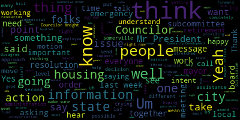
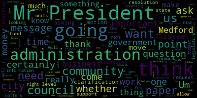
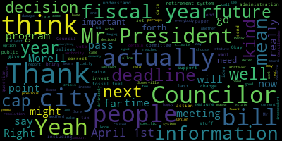

[Falco]: Okay, the 11th regular meeting of the council will now come to order.
[Hurtubise]: Clerk Hurtubise, please call the roll. Councilor Bears. Present. Vice President Caraviello. Present. Councilor Knight. Present. Councilor Marks.
[Marks]: Present.
[Hurtubise]: Councilor Morell. Present. Councilor Scarpelli.
[Marks]: Present.
[Hurtubise]: President Falco.
[Falco]: Present, seven present. We will begin the meeting. Thank everyone for being here tonight. And like I said in our previous meeting, we try to make this as authentic as it usually is at City Hall. So at this time, I would ask everyone to please rise to salute the flag. I pledge allegiance to the flag of the United States of America, and to the Republic for which it stands, one nation under God, indivisible, with liberty and justice for all. Pursuant to Governor Baker's March 12, 2020 order suspending certain provisions of the Open Meeting Law, General Law, Chapter 38, Section 18, and the Governor's March 15, 2020 order imposing strict limitation on the number of people that may gather in one place, this meeting of the Medford City Council will be conducted via remote participation to the greatest extent possible. specific information in the general guidelines for remote participation by members of the public and or parties with the right and or requirement to attend this meeting can be found on the City of Medford website at www.medfordma.org. For this meeting, members of the public who wish to listen or watch the meeting may do so by accessing the meeting link contained herein. No in-person attendance or members of the public will be permitted, but every effort will be made to ensure that the public can adequately access the proceedings in real time via technological means. In the event that we are unable to do so, despite best efforts, we will post on the city of Medford or Medford community media website, an audio or video recording transcript or other comprehensive record of proceedings as soon as possible after the meeting. At this point, I'm required to read the following message from the Office of the Governor. Charles Baker. Order suspending certain provisions of the Open Meeting Law, General Law, Chapter 38, Section 20. Whereas, on March 10, 2020, I, Charles D. Baker, Governor of the Commonwealth of Massachusetts, Massachusetts, acting pursuant to the powers provided by Chapter 639 of the Acts of 1950 and Section 2A of Chapter 17 of the General Laws declare that there now exists in the Commonwealth of Massachusetts a state of emergency due to outbreak of the 2019 novel coronavirus COVID-19. And whereas many important functions of state and local government are executed by public bodies, As the term is defined in general law, chapter 30A, section 18, in meetings that are open to the public, consistent with requirements of law and sound public policy, and in order to ensure active public engagement with contributions to and oversight of the functions of government and whereas both the Federal Center for Disease Control and Prevention, CDC, and Massachusetts Department of Public Health, DPH, have advised residents to take extra measures to put distance between themselves and other people to further reduce the risk of being exposed to COVID-19. Additionally, the CDC and DPH have advised high-risk individuals including people over the age of 60, anyone with underlying health conditions or a weakened immune system, and pregnant women to avoid large gatherings. Whereas Section 7, 8, and 8A of Chapter 639 of the Acts of 1950 authorized the governor during the effective period of the declared emergency to exercise authority over public assemblages
[Bears]: John, we lost you, John.
[Unidentified]: Sorry?
[Bears]: You froze for a second.
[Falco]: OK. Whereas low-cost telephones, social media, and other internet-based technologies are currently available that will permit the convening of a public body through virtual means and allow real-time public access to the activities of the public body. and whereas Section 20 of Chapter 30A in implementing regulations issued by the Attorney General currently authorized remote participation by members of a public body subject to certain limitations. Now, therefore, I hereby order the following. One, a public body as defined in Section 18 of Chapter 30A of the general laws is hereby relieved from the requirement of Section 20 of Chapter 30A that it conduct its meetings in a public place that is open and physically accessible to the public, provided that the public body makes provisions to ensure public access to the deliberations of the public body for interested members of the public through adequate alternative means. Adequate alternative means of public access shall mean measures that provide transparency and permit timely and effective public access to the deliberations of the public body. Such means may include, without limitation, providing public access through telephone, internet, or satellites-enabled audio or video conferencing, or any other technology that enables the public to clearly follow the proceedings of the public body while those activities are occurring. where allowance for active real-time participation by members of the public is a specific requirement of a general or special law or regulation or a local ordinance or bylaw pursuant to which the proceeding is conducted. Any alternative means of public access must provide for such participation. A municipal public body that, for reasons of economic hardship and despite best efforts, is unable to provide alternative means of public access that will enable the public to follow the proceedings of the municipal public body as those activities are occurring in real time, may instead post on its municipal website a full and complete transcript, recording, or other comprehensive record of the proceedings as soon as practicable upon conclusion of the proceedings. The paragraph shall not apply to proceedings that are conducted pursuant to a general or special law or regulation or a law ordinance or bylaw that requires allowance for active participation by members of the public. A public body must operate selected alternative means of access to its proceedings without subscription toll or similar charge to the public. Number two, public bodies are hereby authorized to allow remote participation by all members in any meeting of the public body. The requirement that a quorum of the body and the chair be physically present at a specified meeting location as provided in general law, chapter 38, section 20D and in 940 CMR 29.104B is hereby suspended. Number three, a public body that elects to conduct its proceedings under the relief provided in sections one or two above shall ensure that any party entitled or required to appear before it shall be able to through remote means as if the party were a member of the public body and participating remotely as provided in section two. All other provisions of Section 18 to 25 of Chapter 30A and the Attorney General's implementing regulations shall otherwise remain unchanged and fully applicable to the activities of public bodies. This order is effective immediately and shall remain in effect until rescinded or until the state of emergency is terminated, whichever happens first. So at the last meeting we had last week, we had a hearing that was tabled and that was 20-084. Would someone like to make a motion to take that from the table?
[Caraviello]: Motion to take that from the table, Mr. President.
[Falco]: On the motion of Councilor Caraviello to take paper 20-084 from the table. Seconded by? Second. Seconded by Councilor Scarpelli. Clerk Hernebiz, would you please call the roll?
[Hurtubise]: Yeah, President Falco, it was tabled to a date certain, so it's automatically coming off the table anyway.
[Falco]: Okay, okay, then we don't have to take them both then, right? Correct. Okay, my apologies. Okay, 20-084, hearings. This is a notice of a public hearing. Hearing is 20-084, City of Medford. Notice of a public hearing. The Medford City Council will hold a continued public hearing via Zoom on Tuesday evening, April 7th at 7 p.m. on a petition from Anne Bakery, Carla Barile, 17 Placestead Road, Medford, Massachusetts, 02155, for a special permit to amend its hours of operation in accordance with Method Zoning Ordinance Chapter 94, Section 94-145, to operate extended hours at its business at 17 Placestead Road, Medford, Massachusetts. Said site being located in a commercial 1C1 zoning district as follows. Extended hours of operation requested, 6 a.m. to 7 a.m., seven days per week. Petition and plan may be seen in the office of the city clerk. Number three, Medford City Hall, Medford, Massachusetts. Call 781-393-2501 for any accommodations, aids, TDD 781-393-2516 The City of Medford is an EEO-AA-504 employer. For information, contact the City Clerk at 71393-2425 by order of the City Council. Adam L. Hurtubise, City Clerk. This was advertised in the Medford transcript on March 12th and March 19th. At this point, I declare the public hearing open and open to those in favor of the petition. Anyone in favor of the petition, could you please state your name and address for the record?
[SPEAKER_11]: Hi, I'm Marilla Barilli, owner of N Bakery. Hope you're all well. Thank you very much. And can we have your address for the record, please? My home address or address to the bakery? Court, do you need a home address, right?
[Hurtubise]: Either one is fine.
[SPEAKER_11]: Okay, so the home address which we have a residential bakery is 110 Powerhouse Boulevard in Somerville, Massachusetts. The brick-and-mortar address to the business in Medford is 17 Playstead Road. Okay, thank you.
[Falco]: You are here speaking in favor of the petition? Yes. Okay, thank you. Would anyone else like to speak in favor of the petition?
[Unidentified]: The dog doesn't talk.
[Falco]: Clerk Hurtubise, do you have anyone that would like to, any emails from anyone that would like to speak in half or any comments?
[Hurtubise]: I do not, Mr. President.
[Falco]: Okay, thank you. Seeing and hearing none, I declare this portion of the hearing closed. Anyone in opposition of the petition? Anyone in opposition of the petition? Clerk Hurtubise, any emails from anyone in opposition? There are none. Thank you, Clerk Hurtubise. Hearing and seeing none, I declare this portion of the hearing closed. At this time, I'll recognize the chairperson on licensing, Councilor Scarpelli.
[Scarpelli]: Thank you, Council President. We reviewed all the paperwork and documents that are needed. Everything seems to be in order. Before we move on, could Ms. Burrell give us a little, for the people that don't know what we do at that site, could you just give us a little insight and we'll go from there.
[SPEAKER_11]: Um, so and bakery, um, we're opening a little small bakery, uh, 17 place that road is actually right across the street from the commuter rail that goes into Boston. And so the reason that we were petitioning to open at 6am instead of seven, um, is because so that we could maybe be able to service. more customers that were going into Boston that have to go into work at an earlier time. So that's the reason that we wanted to open up the hour early. I put down six and we just put down for every day because when we first opened, which with what's happening now, we definitely have been pushed back and We've had a lot of setbacks. I, myself, actually had a brain tumor removed in November, hence the little hat. So we've had setbacks. And now this, so we don't know when our opening date is actually going to be. But when we do open, we plan to be open every day just to see what our busy day is, what's our slowest day. and then change our schedule accordingly.
[Scarpelli]: Okay, so I see all the paperwork in order, Mr. President. I know that we have other very similar establishments that are open at that time. So sense of fairness, I think it just, it would be feasible that we move forward with this in favor. So I know my fellow colleagues will have some questions, but I would move for approval.
[Falco]: Thank you, on the motion of Councilor Scarpelli, Councilor Knight.
[Knight]: Mr. President, I certainly have no problem with this paper that's before us this evening. I live right down the street. It's a very tough location, and I wish you the best of luck there. Thank you. However, Mr. President, I do feel it will be appropriate for us to put a condition on the special permit that would grant the extended hours to the business, but not to the property address. So in case there is a change. that application. The next business would have to, or the successor business would have to petition the council for extent that it operates as well. So that's the amendment that I'd often misrepresent. It would be a conditional thing that goes with the business, not the property address. Okay.
[Falco]: Thank you, Council. Thank you, Councilor Knights. that is what I have as well.
[Knight]: I was not, but I certainly wouldn't be opposed to it.
[Falco]: Okay. Uh, I'll make that amendment that. Okay. Amended by councilor Scarpelli for 90 day review. Vice president.
[Caraviello]: Thank you, Mr. President. Uh, I am supported this, uh, Carla. My only question is, um, why didn't you ask for five o'clock similar to, uh, Dunkin' Donuts to Magnificent Muffin and, uh, the other establishments over there. I know you're trying to capitalize on the, uh, the train traffic for the communities in the morning. But the other establishments are open at five.
[SPEAKER_11]: So well, actually, honestly, I didn't know what time those establishments opened. I'm not usually there at that time to see what time they're opened. I just thought that six o'clock would be okay. I can I be open at five or that's a whole new, that would be a whole new letter and a whole new, in the newspaper.
[Caraviello]: Originally, I was gonna ask. We'll start with six and see where it goes, but the other businesses are all, Dunkin' is open at five, Magnificent Muffin opens at five, and I think Paul Revere is open at five also.
[SPEAKER_11]: Yeah, so I guess the people that are there early for five are gonna get like bad coffee, and then the people that can come at six will get some good coffee.
[Caraviello]: But I am in full support of this, Mr. President, and welcome to the neighborhood, because I am a resident of that neighborhood also. So welcome to the neighborhood. I hope to see you soon.
[Falco]: Thank you. Thank you. Any other questions from the councilors?
[Scarpelli]: I don't move approval.
[Unidentified]: Okay.
[Falco]: On the motion of Councilor Scarpelli, seconded by? Second, Mr. President. Councilor, Vice President Caraviello, as amended by Councilor Knight. Councilor Scarpelli, Clark Herbies, please call the roll.
[Hurtubise]: Councilor Bears? Yes. Vice President Caraviello? Yes. Councilor Knight? Yes. Councilor Marks? Councilor Marks, you still there? Hang on. He was having trouble. He was muted. You got him?
[Unidentified]: Yeah.
[Hurtubise]: Councilor Morell?
[Unidentified]: Yes.
[Hurtubise]: Councilor Scarpelli?
[Falco]: Yes.
[Hurtubise]: President Falco?
[Falco]: Yes. Seven in the affirmative, zero in the negative, the motion passes. Congratulations, good luck.
[SPEAKER_11]: Thank you.
[Falco]: Stay safe. Thank you.
[SPEAKER_11]: Thank you, you as well.
[Falco]: See you soon.
[Caraviello]: Good luck.
[SPEAKER_11]: Should I stay on? Oh, you can go if you'd like.
[Bears]: Only if you want to. It's going to be riveting.
[Falco]: You're all done. Everyone's welcome.
[SPEAKER_11]: Well, thank you very much. Thank you.
[Falco]: Have a good night. Good luck. Bye bye. Motions, orders, and resolutions. 20-042 offered by Councilor Morell, whereas the City of Medford currently exercising the local option for tax deferments in accordance with Mass General Law, Chapter 59, Chapter 5, Paragraph 41A. And whereas the upper income limit set by the City of Medford for eligible residents 65 and over is $20,000 per year. The result of this, Medford City Council discussed raising the income limit to better reflect the cost of living, the cost of living and housing in Medford. Councilor Morell.
[Morell]: Thank you, Mr. President, just since this was reprinted just from the original meeting where I had the erroneous information the current cap is at 40,000. But in short, this is a program, as you read it allows seniors meeting certain criteria and the city, and under an income cap to defer their real estate taxes until they either sell their home or pass away. And currently our cap sits at $40,000, and the idea was to raise this. We're able to raise this as high as the senior circuit breaker tax income credit. And I believe for fiscal year 21, that would be $60,000. We, by voting on this now, would go into effect for fiscal year 21. So it came up last year, last year, last week, the idea of a $50,000 cap. I think originally we were all thinking of doing more, but in light of to raise the cap to $50,000 for fiscal year 21.
[Falco]: Okay, on the motion of Council Morell to raise the cap to $50,000, seconded by Councilor Bears. Are there any questions from the council? Okay, no questions. Would anyone else have questions? Okay, let's see. Ms. Cameron.
[Bears]: Councilor Knight.
[Falco]: Oh, I'm sorry, Councilor Knight goes first and then we'll go to Roberta Cameron.
[Knight]: Mr. President, I certainly have no problem raising the deferment cap. This is something that we talked about back in 2019, I do believe as well. The question that I do pose is this, is this paper offered in the proper form for us to adopt it this evening, or is there specific length which required per the division of local services that needs to be adopted in order to raise the cap?
[Falco]: Good question, Councilor Morell,
[Morell]: I mean, as the statute is written, it says just, it says by a vote of the council alderman, whatever. I spoke, the clerk has his hand up.
[Hurtubise]: I can interrupt for a second. I believe Ms. Burdeaux last week at the committee, the whole put that into proper form when she suggested how the motion should be made. Councilor Marks made that motion in the committee report and you voted it out. You voted on it in committee. So if you vote to adopt the committee report, I believe you should be to adopt the committee report. I think it should be all set in terms of adopting it one way or the other. If you want to use the suspenders and belts approach, you can pass the resolution tonight and adopt the committee report. I think it should be all set either way.
[Falco]: Councilmember Morell, did you want to comment further on that?
[Morell]: But as I said, as the state statutes ran it, the wording I believe is by a vote of, it can be said by a vote of. It's actually fairly kind of a... I was just gonna say if we wanna pass this resolution and then we have the committee reports at the end of the meeting to the correct point, whether it's through the... this resolution or adopting the committee report, it seems like we should have our bases covered. Thank you, Councilor Morell.
[Falco]: Councilor Knight.
[Knight]: Just a question. Thank you.
[Falco]: OK, thank you, Councilor Knight. Roberta Cameron.
[Roberta Cameron]: Hello. Thank you. So I just wanted to suggest that if the participation rate in this program is currently very low, I wonder if the city could do more to increase the participation rate besides just increasing the income levels, but also maybe sharing the availability of this program and helping people to understand what the implications of the program are. Because I understand that there are downsides to participating, but there are also benefits and it's better than some of the alternatives that people have used in the past who are having difficulty paying their property taxes. so that it would be a more beneficial program than say a reverse mortgage, which people have used. So it would be helpful. I would like to see the city to take additional measures to increase the participation rate. That's all. Thank you.
[Morell]: Thank you. Councilor Morell. Thank you, Mr. President. I'd be happy to add a B paper that when this is set and finalized, that it go out in the next send of real estate, tax bills, a notification that this program does exist in the deadline. I don't, maybe it would be too soon to send in the next one as the deadline is April 1st of next year, but just actually including that with a future set of bills.
[Falco]: Do you have the language on the B paper?
[Hurtubise]: I'm working on the language. I need a little clarification. Councilor Morell, you wanted to go out in a future meeting, but not necessarily in a future mailing, but not necessarily the next future mailing.
[Morell]: Yeah. Yeah. And it honestly, it might get lost during this time anyway. So perhaps closer to when the deadline is for the program.
[Hurtubise]: Got that.
[Morell]: Mr. President. Councilor Marks.
[Marks]: I would support that increased notification as well as adding all the other exemptions that currently exist as well. So it wouldn't be just the deferment that goes out, it'd be the senior property tax exemption, it would be the disabled property tax exemption. I believe there's one for the blind, there's four or five of them out there. So I would ask that they all be sent out as well if that's all right.
[Falco]: That sounds good, that's a great idea, thank you. Any other comments from the Council with regard to the motion or the B paper? Vice President Caraviello.
[Caraviello]: Thank you, Mr. President. I support the along with Councilor Miles amendment so that we do have all the options available to them. With the next real estate tax bill, because we just saw last week. Is there what was the date that this had to be uh applied for?
[Morell]: The deadline's actually april 1st of next year. Okay, so if we sent it out in the next tax bill, everybody should have a correct That's the bill that everybody gets that owns homes Yeah, and it may be I mean i'm fine leaving uh it as um, just saying a future bill and perhaps deferring to the assessors when it would be be most beneficial or there's not other stuff that has to go out as well to send it out. I mean, we can conjecture as far as what people might do if they get it in there six months from now, whether they'll lose that paper and forget about it. So I'd be happy to just defer to the administration.
[Marks]: This is only a recommendation.
[Morell]: Correct. Right. Right.
[Falco]: Okay. Any other questions from the council? Okay, any other questions from anyone that's, oh, yes, down here. Name and address for the record, please.
[Hurtubise]: We aren't able to hear you.
[Unidentified]: Yeah, we can't hear you. I am muted too. We can't hear you. Is that Dennis? I think so. Okay.
[Marks]: Maybe if he could send someone an email with his question. Exactly. If you'd like to send an email to the clerk or yourself or anyone he's familiar with.
[Hurtubise]: Or you can also try to chat the question.
[Falco]: Dennis, can you try to chat the question?
[Unidentified]: We haven't had anybody do that yet.
[Falco]: Okay, while we're waiting, is there anyone else with a question? And we can come back to Dennis.
[Unidentified]: Ask him to turn his volume up if it's not already up. I see the question came through. Did a question come through? Okay, let's see.
[Morell]: I can address it if... Sure. So the question is, so this item will be deferred until April 1st question. So the deadline for fiscal year 2020 was April 1st of this year, and we would have had to set the rate actually by the end of the previous fiscal year. So we have to, this rate has to be decided by the end of this fiscal year in order for it to be enacted for fiscal year 2021. And the deadline to apply for that is April 1st of 2021. Okay. I think I saw an okay.
[Bears]: I'm thinking the same thing.
[Falco]: Okay, then if there are no other questions, Clerk Harnabees, do you have any questions that came through email?
[Hurtubise]: I'm checking, but I don't believe so. I don't have any, correct.
[Falco]: Thank you, Clerk Harnabees. So what we'll do is we'll vote on the B paper first. Clerk Harnabees, could you please read back?
[Hurtubise]: Mr. President, quick question. Is Council Marks' amendment a C paper or is it part of the B paper? Or is it an amendment to the main paper?
[Falco]: If that's all right with Councilor Morell. Yep, yes. So we'll make that part of the B paper. So on the B paper offered by Councilor Morell, seconded by Councilor Marks. Clerk, her to be, please call the roll.
[Hurtubise]: Councilor Bears. Yes. Vice President Caraviello. Yes. Councilor Knight. Yes. Councilor Marks. Yes. Councilor Morell.
[Falco]: Yes.
[Hurtubise]: Councilor Scarpelli?
[Falco]: Yes.
[Hurtubise]: President Falco?
[Falco]: Yes. Seven in the affirmative, zero in the negative, the motion passes.
[Catalo]: Yes. Seven in the affirmative, negative, the motion passes.
[Falco]: On the main motion offered by Councilor Morell, seconded by Councilor Bears. Clerk Curnaby, please call the roll.
[Hurtubise]: Councilor Bears? Yes. Vice President Caraviello? Yes. Councilor Knight? Yes. Councilor Marks? Yes. Councilor Morell?
[Falco]: Yes.
[Hurtubise]: Councilor Scarpelli?
[Falco]: Yes.
[Hurtubise]: President Falco?
[Falco]: Yes. Seven in the affirmative, zero in the negative, the motion passes. 2-0-288, offered by Councilor Morell and Councilor Bears. Whereas Massachusetts House Bill 4440 seeks to allow all independent public retirement systems subject to oversight by the Public Employee Retirement Administration Commission, PRAC, to divest their holdings in full or in part from the fossil fuel industry. And whereas H4440 authorizes independent public retirement systems to exercise their fiduciary duty as defined in Mass General Law chapter 32, section 23, 3, with respect to continued investment in the fossil fuel industry. And whereas such authorization is required by PRAC, PRAC communications to the Cambridge Retirement Board, CRB, dated October 23, 2017, and to the Salvador Retirement Board, SRB, dated November 7, 2017. And whereas communities throughout Massachusetts, including Amherst, Boston, Brookline, Cambridge, Concord, Falmouth, Framingham, Great Barrington, Lexington, Lowell, Newton, Northampton, Provincetown, Somerville, Sudbury, and Truro have passed resolutions in support of fossil fuel divestment and be it resolved that the Medford City Council express its support for House Bill 4440 and urge the Massachusetts Legislature to take action to pass this measure to enable independent public retirement systems to use their prudent judgment in regards to fossil fuel divestment and We have further resolved that the city clerk forward a copy of this resolution to the Medford legislative delegation, as well as the chairs and vice chairs of all committees to which H4440 is or will be assigned. House Speaker DeLeo, Senate President Spilka, and Governor Baker. Councilor Morell, would you like to speak of it?
[Morell]: Yes, thank you, Mr. President. So I just want to note and really reiterate that House Bill 440 urges the Massachusetts legislature to take action to pass a measure to enable independent public retirement systems to use their prudent judgment in regards to fossil fuel divestment. So it's important to note that this body's support of the bill does not codify any action by the city, but it simply expresses our support of a bill that would allow us to divest from fossil fuels at some time in the future, should we choose to do so. So I bring this forth, Councilor Bears and I bring this forth at the behest of many citizens that have reached out in the city of Medford, and a number of which are actually in the retirement system in the city. By de facto investing our retirement funds in fossil fuels, we tacitly support emissions that contribute to climate change and all the damage associated with it, including air pollution and any issues and ailments caused by it. And I think it's, we as a city, It's very hard for us to work towards climate change adaptation and mitigation in one office while we invest in the very industry that's caused the need for such things in another. So the current crisis also highlights just how vulnerable and sensitive our systems are. And we can't continue to invest in a system that damages the very planet we live on and exacerbates all natural crises. And that's kind of my stump for that.
[Falco]: Thank you, Councilor Morell. Councilor Bears.
[Bears]: Thank you, Mr. President. Yeah, I think everything Councilor Morales said is spot on. And I just want to add a couple of things. One, which is that the folks who have been leading this fight, many of them are public employees themselves, the people whose retirement funds we're talking about here. I know many of the large major public employee unions in the state support this bill. We got a letter from the political director of Service Employees International Union, SEIU Local 509 today. So You know, I think workers want to see their retirement invested prudently, and I think there's no actually better evidence of that. I think this would have been good at any time, but what we've seen with the market over the past few weeks, and also combine that with a massive oil price war that has deeply dropped the price of oil and devalued stocks, this would not be the time for retirement funds to be buying into the fossil fuel industry anyway. So I think we've seen a great evidence of the volatility. that's happening now and that's only going to get worse as our global energy system is disrupted by the fact that we can't use fossil fuels for much longer if we want to keep the planet healthy.
[Falco]: Thank you, Councilor Bears. Councilor Knight and then Councilor Caraviello. Councilor Knight.
[Knight]: Mr. President, thank you very much. This is a good bill, House 4440. It allows us to put our money where our mouth is, Mr. President. We all talk a good game when it comes down to protecting the environment, but this allows us to invest our money in areas like green energy and clean energy as opposed to with fossil fuels. So I think this is a good measure. It allows flexibility for us to exercise our community's values when it comes to the moral and ethical obligation to greenhouse gas pollution. So I commend my fellow colleagues for bringing this issue forward and it's something that I support wholeheartedly.
[Falco]: Thank you, Councilor Knight. Councilor Caraviello.
[Caraviello]: Thank you, Mr. President. Mr. President. I have a problem with this bill because these people that run these retirement, they're independent and autonomous bodies. And I feel that it's not up to us to be telling these people what to do. I feel that this is something that we should be, that people should be calling the state delegation about and not venting through us. And again, I say these people are independent and autonomous, and let's say not that it's not the right thing to do, and you're asking them, To use their prudent judgments in regards, uh, these people that that have their i'll assume are using uh prudent judgments Uh, and unless unless someone shows me difference So I say at this point, I uh, I I don't know that if this is a matter for us, but it should be a matter for uh, people should be voicing to the the state delegation and not the medford city council
[Falco]: Okay, thank you Councilor Caraviello. Any other councilors like to speak on this? Councilor Marks.
[Marks]: Thank you, Mr. President. I'm just posing a question. What would prevent any retirement board currently from doing any different type of divestment they'd like to do?
[Morell]: Councilor Perak. As I understand Perak, In a previous decision brought forth from the Somerville City Council, and I know there are actually people on this call who are very well versed in that, they advised against it, but they actually, at a later date, they went back on that decision, I believe, or just decided that it was actually not the best advisement as far as ways to invest. So because that independent board had advised against it, they were, the Somerville City Council was unable to pass their measure. And that's why this has come up in this form, because I see Councilor Scarpelli has his hand raised. If people can offer, yeah, I mean, that's my poor retelling of it, so.
[Marks]: Mr. President, just if I could, I had the opportunity to talk to one of our local board members, and he said at this current point, if the board decided to divest in any different option that they chose, they would go to their advisor and choose to do so, and nothing would prohibit them from doing so. Unless there was a conflict of interest of a board member, And that is a whole other ballgame. I'm not bringing that in, but that's a whole other ballgame. So I'm not sure quite what House 4440 does in moving this issue forward, if we're really talking about, you know, investing in our planet and so forth. I think currently, these boards have the ability to do so. And they can exercise that right. So I'm not quite sure what this does. If it's just a feel good type initiative, then so be it. But I'm not sure what weight this really holds, to be quite honest with you.
[Falco]: Thank you, Councilor Marks. We have a number of people that want to ask questions and speak, so we will get to everybody, but just going to call out some of the councilors first. Councilor Morell, I believe you wanted to comment on that.
[Morell]: Yeah, thank you, Mr. President. So this isn't just like a feel good kind of, so Bill, I mean, it does feel good, but the boards do need specific legislative authority because the way it is designed, and I do know that there are people on the call that can speak to this, but it's not just that there is specific authority that is needed.
[Falco]: Thank you. Councilor Morell, I believe.
[Marks]: So Mr. President, if I could, cause I feel that a number of emails and phone calls and in my conversations and back and forth with residents, I asked each resident if they were a member of the retirement board and quite to my amazement, Not one retiree or member of the current retirement board reached out to me to express their opinion on this. It happened to be everyone outside of the retirement system and everyone's open to their own opinion, which is great. But I think we have to remember this is $182 million worth of assets for our retirees in this community. And we have to be very mindful that any change could have a potential impact on the investments that are being made. And the future of many retirees in this community. So I think we have to be very mindful of that. At least I am before I take any action.
[Morell]: Point of information. Thank you, Councilmember Mox. Point of information, Councilmember Morell. So this won't codify any decision by our public, our retirement system. This will just say we have, it will give bodies like the public retirement system in Medford, it will give them the option to make this decision. It doesn't divest. It doesn't do anything. It just gives the option to make that decision at a future date, should they choose to.
[Marks]: Right. And specifically, the language states fossil fuels. So you're making it sound like, oh, they can go off and do whatever they want. But the legislation specifically says fossil fuels and to divest from fossil fuels, which is Exxon, Chevron, British Petroleum, a lot of the major S&P. bear holders. And I think we have to be very careful because this will have an impact. I don't know if anyone could state what type of impact, but if we do move away from a certain energy, it will have an impact on retirees within this community. And I think we have to be very mindful of that. Thank you, Councilor Marks.
[Falco]: Councilor Bears.
[Bears]: Thank you, Mr. President. You know, I think, There are definitely people on this call as well who can speak more to this than I can. But what the bill does is essentially there's different categories that to my understanding and other people can describe it better of what different things you can factor into investment decisions. This would authorize the retirement board to consider this as a factor in decisions that they make. So it's not saying Right now they're not authorized to do that. They're like specifically what you said They're not authorized to say we don't want to invest in fossil fuel companies This would allow them to make that decision if they wanted to And it's just allowing the ledge asking the legislature to pass a bill to grant that authority to municipal retirement boards So we wouldn't be making this decision It would just say that the retirement board could make the decision in the future if they wanted to or any Any of those boards across the state? Thank you
[Falco]: Thank you, Councilor Bears, Councilor Knight, and then Councilor Scarpelli.
[Knight]: Yes, Mr. President, I think it's very important to point out that this is nothing more than giving our retirement board flexibility and an option to make a determination as to whether or not we want to divest from fossil fuels in the investment of our public pension funds. Because our public pension investment bodies are Um, autonomous in nature, legislative action will be necessary because the retirement board is telling them they need to get a return of a certain amount, whether it's 7% forecast, 6% forecast. Um, we're not getting that return. We can't tell them what to invest in and then expect them to make a return. So that's why this legislative authority is necessary. This does nothing. It doesn't mandate that we divest. What it does is it gives us the opportunity to pursue it. Um, and if our community has values that, uh, reflect this lack of reliance on fossil fuels and a move towards green energy, a move towards being carbon neutral. I think this is a tool that we want inside our toolbox. So I don't think it's going to hurt us any just to support the legislation, Mr. President, because it's still going to allow our retirement board to make the decisions that they made them in the past, but it's going to give them a little bit more flexibility. So it's something I'd be willing to support.
[Falco]: Thank you, Councilor Knight. Councilor Scarpell.
[Scarpelli]: Thank you, Council President. I just, I thank Councilor Morell for bringing that up and the fact that I am a member of the Somerville Retirement System, PARAC, and so that you've all answered it to the specifications that I as an employee for the City of Somerville understand that. So I think that it doesn't preclude anything yet, but what it does is it puts us in a position as a community to put our money where our mouth is, and that's what everybody's saying. But it doesn't actually, right now, there isn't anything that's prohibiting them from doing that. So this is just moving the paper forward to show the support. So I support this. I think it's a a great idea and it, you know, and it causes some more concern as you see what's going on right now in our environment. So thank you, Mr. President.
[Falco]: Thank you, Councilor Scarpelli. Any other councilors, are there any other councilors that would like to speak on this? Mr. President. Councilor Marks.
[Marks]: That's a very appropriate term, putting your money where your mouth is, because in fiscal 20 of last year, the taxpayers in this community invested $12.2 million into the retirement system to make that system whole. And every year over the last 20-something years, Mr. President, the taxpayers have been supplementing the retirement system to make it whole. And, uh, I'm not saying this is going to happen, but eventually when you do open the door, uh, you will be putting your money where your mouth is. Um, and the taxpayers will be paying the burden of that, Mr. President, as well as the retirees. So this doesn't just impact retirees. It impacts every taxpayer in this community down the road. potentially could be paying additional money depending on what investments made, what diversity is done in regards to investments and so forth. And this could have a major impact, Mr. President. So, you know, the proponents of this would like you to believe that this is just another tool in the toolbox. This is the opening of the door, Mr. President, to now go and put pressure on our local boards, because that's the next step. The next step is to go put pressure on the local board members to start making the changes, Mr. President. And so be it. And I applaud anyone that's working towards a cause, Mr. President. But I'm mindful of the taxpayers of this community. I'm mindful of keeping a strong system. Our last five years, the return was 6.25 in our portfolio. The last three years was 8%. And this year, before the issue that we're in, it was at 10.9%. and it's down very much from that. But I just want to state, Mr. President, based on what our portfolio has been over the last five years, any change could have a devastating impact, Mr. President, to the returns and to our retirees and to our taxpayers. Thank you, Councilor Marks.
[Falco]: Any other councilors like to speak? Okay. At this point, I recognize Colby Cunningham.
[Unidentified]: Name and address for the record, please.
[SPEAKER_09]: My name is Colby Cunningham, and my address is 259 Highland Avenue, Arlington, Massachusetts. And I am the president of MassDivest. I wanted to speak mainly to the first issue that was raised as to whether or not independent retirement systems are currently allowed to divest from any particular sector. And that's the root of this bill that's under consideration. Somerville attempted to divest its pension system in part, a small trial balloon of its funds from the fossil fuel industry back in 2017. At that time, PARAC, which serves as the state regulator of all independent retirement systems, including both Somerville, Medford's, Boston's, et cetera, sent a letter to the Somerville Retirement Board stating very explicitly that the wholesale divestment from any particular sector, whether it be energy or utilities or any sector of the S&P, would be a violation of fiduciary duty if that was done without explicit permission from the legislature. And so at that time, because they were told that they did not have the authority to do that without a legislative intervention, Somerville unwound its divestment. So they were divested in part for about a month. And then they unwound that because PARAC made this ruling. PARAC also sent a similar notice, as the resolution states, to Cambridge. So that's two cities in Massachusetts that were told explicitly by their regulator that they were not allowed to divest from fossil fuels or any other sector without the legislature providing explicit authorization to do so. So that is, in fact, explicitly necessary per their regulator. I also want to address Councilor Marks' concerns regarding the finance element of it. One of my colleagues is also on this call, Jamie, and he will He'll speak to the study that we did regarding the performance of Somerville's divested portfolio. But I do want to point out that the energy sector, which is dominated by the fossil fuel industry, was the worst performing sector in the entire past decade. So when it comes to concerns regarding the impact on pensioners and taxpayers in Medford, the impact of the fossil fuel industry is extremely negative. And so the concerns that Councilor Marks raises I think are incredibly valid and really important, but they are oriented in the other way, because the fossil fuel industry is a huge drag on all pension systems and the S&P 500 in whole. And so it's those costs that are part of, to taxpayers, that are part of why we advocate for this legislation.
[Unidentified]: Thank you. Jamie Hall.
[Falco]: Name and address for the record, please.
[SPEAKER_20]: My name is Jamie Hall, and my address is 233 Cedar Street in Somerville, Massachusetts. Good evening, and thank you, city councilors. As Colby mentioned, the remarks that I've prepared I think can help answer a question that was raised by Councilor Marks regarding the impacts of, financial impacts of divestment from fossil fuel companies. I'm here in support of Resolution 20-288, which would support H4440. I'm a consultant at an economic consulting firm specializing in energy economics, but I'm speaking now as a citizen who's concerned about the climate crisis and a member of MassDivest. I'm also the author of a 2019 white paper that I developed for MassDivest, and it serves as a good divestment case study. As Colby Cunningham mentioned earlier, in June 2017, the Somerville Retirement Board voted to divest 9.5 million of its assets from a portfolio that includes fossil fuels, and instead reinvest them in a fossil-free index fund. But in July 2017, PARAC intervened and Somerville's was required to reverse its divestment decision. The analysis that we conducted explores the returns of Somerville's divested portfolio alongside the S&P 500 index fund over a two-year period from July 2017 to June 2019. And it shows that the divested portfolio would have achieved 5% higher growth than it did by remaining invested in the S&P 500 fund. That includes fossil fuel companies. According to the 2018 PARAC annual report, the Medford Retirement Board has over 40 million of its assets tied in with the S&P 500. And so our findings that a divested portfolio would have achieved 5% higher growth over that two-year time period than the S&P 500 also applies to those $40 million in assets. We're working on an update to that white paper that extends it through March of this year, and the preliminary results show that the divested portfolio performed 6.4% better than the S&P 500 from July 2017 through to March 2020. Because of this and because of the urgency of the climate crisis, I ask that the Medford City Council please pass Resolution 2288 in support of House Bill 4440. Thank you.
[Unidentified]: Thank you.
[SPEAKER_22]: Thank you. City Councilors my name is Craig Slayton. I'm a resident of Medford living on Dover Street. I'm a retiree in the state pension system. In addition to my pension funds I have some other retirement investments and I was just speaking with my financial advisor, couple of weeks, two weeks ago, as we watch the market tank. And he said, boy, it's a really good thing that you convinced me to get you out of fossil fuels because they really took a hit. If Medford wants to take responsibility for keeping fossil fuels in its retirement pension funds and screw the retirees of the city. Shame on Medford, but it has the right to do it. But this bill, this resolution would make it possible for any other municipalities, in addition to Medford, that want to do right by the retirees to take the actions. I'm a member of the Massachusetts Teachers Association for several years. We work to get the delegates to the annual meeting of the MTA, which is the largest union in the state of 110,000 members. to call on the legislature to support legislation and the legislature to have the Pension Reserves Investment Management Board, which manages the state pensions, to divest from fossil fuel holdings. At that point, it was coal. The same kinds of arguments that Councilor Marx is raising were raised by our representatives to the PRIM for several years. And then the third time that we moved this measure, we finally got the members of the delegates to the annual meeting to understand the dire consequences of staying with fossil fuels. and they voted to support legislation to do this. The fossil fuel industry, in addition to being largely responsible for the climate crisis that we face, which is going to bring tremendous cost to the city of Medford as it tries to cope with the consequences of this devastation, In addition to that, though, the fossil fuel industry also is one of the greatest polluters of this area. And in fact, Attorney General Healey has sued Exxon Mobil because of their facilities in Chelsea, which are polluting the Mystic River, the very river that flows into Medford, and we have to deal with that pollution. So I think on lots of grounds, it makes a lot of sense for this city council to endorse this resolution and call upon the legislature to pass this.
[Unidentified]: Thank you. John, are you there? Nope. Dennis? I'm having problems. Dennis?
[SPEAKER_14]: Can you hear me?
[Scarpelli]: I can't. It's really faint. Maybe just- Very faint, yeah.
[9sF78fOJr5I_SPEAKER_27]: I can hear you a little bit. Yes. Yes.
[Bears]: Yes. Talk right into it.
[9sF78fOJr5I_SPEAKER_27]: I'll try to speak up. For some reason, the mic's not working very well. So I'm definitely in favor of this bill. And like I said, I've spoken to retirement boards and emailed them and so on, called people. And they all say, well, it's not our decision. It's a requirement by the state. And it's that board that people talked about that says that they can't make those decisions. The municipalities can't make those decisions right now. And all the bill asks for, again, is that the cities and towns be able to make those kind of decisions on their own about where they want to make investments. The other point I want to make is that right now oil and so on is down. It doesn't mean it won't go up later. And I'm not advocating that if it goes up, the town should be allowed to invest in it. Of course, they should be allowed to invest in it. The bill would not prevent them from doing that. But I'm not in favor of that. The whole point of this bill right now is not just to save money for retirees, which is a great thing to do, but also to help mitigate the consequences of climate change, which is happening. We have the weather problems. There are gonna be storms this fall. That's all I have to say right now. Thank you.
[Unidentified]: Thank you. Any other questions? Okay, I think I got everybody.
[Falco]: Let's see. Oh. See Curtis Tudin. Oh, so we have a Curtis, Curtis Tudin.
[opOzyZvPRK0_SPEAKER_29]: Hi, good evening everyone. My name is Curtis Tudin. I live at 38 Early Ave in Medford. And first I'd like to thank the council and the clerk's office for continuing to work in this time of crisis and making the meeting available online. Second, I want to send my warmest regards to fellow residents who are trying to pull through this historically trying time. The disease will end someday and that's why my focus tonight is on a healthy future for our environment. I've been a city employee for the last 10 years and long from now when I'm able to retire, I want to know my money wasn't made at the expense of our natural world and future generations. The current situation where part of my paycheck is used to finance a failing and deadly industry cannot continue. Though the final decision falls on our state reps, Medford City Council voting in support tonight would send a clear message that the failure to act responsibly by confronting climate change will not be tolerated. We have about 10 years to completely divest from fossil fuels. So let's take this small step forward together. And thanks to everyone who shows their support and solidarity with the environment this evening, and good luck to us all in the coming days and decades of crisis management. Thank you.
[Falco]: Thank you very much. Colby Cunningham, did you have?
[SPEAKER_09]: Thank you. Uh, just one thing I I failed to mention in my original comments that I I added in the chat But I wanted to make sure the council was aware of uh, is that exxon mobil is currently being sued by uh attorney general healy, uh for not just the the pollution issues that were raised earlier, but in a separate lawsuit Uh is being charged with violations of the massachusetts consumer protection statute and those charges include deceiving institutional investors like The medford retirement system and all the other retirement systems in massachusetts about the impact that climate change was going to have On exxon mobil's own business model. Uh, so we have a situation where the state of massachusetts is aware or is concerned or is concerned that institutional investors are being misled by a major actor in the fossil fuel industry and the energy sector generally. And so it would really behoove the Medford retirement system, all the independent retirement systems, to have the opportunity to make their own decisions as to whether or not they would want to continue to be invested in an industry that is known to the state of Massachusetts to be lying to them about their own business model. And I included a link to the Attorney General's press release about that lawsuit in the comments.
[Falco]: OK. Thank you very much. I think that was it as far as questions go. Clark, any emails that have recently arrived?
[Hurtubise]: There have been none during the meeting. Anything that arrived before the meeting, I forwarded to you already. But there have been none during the meeting.
[Falco]: Thank you. On the motion of Councilor Morell and Councilor Bears, seconded by. Is there a motion to have a second? Second. Seconded by Councilor Knight. Clerk Kernbees, please call the roll.
[Hurtubise]: Councilor Bears? Yes. Vice President Caraviello? No. Councilor Knight? Yes. Councilor Marks? No. Councilor Morell?
[Unidentified]: Yes.
[Hurtubise]: Councilor Scarpelli? Yes. President Falco?
[Falco]: Yes. Five in the affirmative, two in the negative, the motion passes. Thank you. 20-293.
[Bears]: Mr. President, I move to withdraw this paper.
[Falco]: Okay. 20-293 has been withdrawn by Councilor Bears. Thank you, Councilor Bears. 20-297 offered by Councilor Knight. Be it resolved that the Medford City Council requests the city administration deploy the park police to enforce emergency use bans at our parks. Councilor Knight.
[Knight]: Mr. President, thank you very much. This paper was offered by way of an amendment to, I believe, a paper that we took up last week. So the matter is moved. It's been sent to the administration already. I move for withdrawal.
[Falco]: Councilor Knight has withdrawn this paper 20-297. 20-298 offered by Councilor Knight. Be it so resolved that the Medford City Council congratulate Sharon Chappell Hepburn on her team in celebration of the 10th anniversary of her business, Mystic Coffee Roasted Square. Councilor Knight?
[Unidentified]: Councilor Knight?
[Falco]: Adam you're up.
[Knight]: Sorry, Mr. President, I'm having what they call technical difficulties. What self explanatory. Aaron's a great person she runs a great business down there in Method Square. She's very involved the arts community allows many, many local artists to display work in her shop. But Mr. Coffee Roses has been around now for 10 years. It's amazing. I remember when it first opened. So time certainly flies when you're having fun. They run a great business and I'd like to congratulate Sharon and her staff on all the success that they've had in the past and for another 10 years of success in the future, Mr. President. I ask my council colleagues to join me in supporting this resolution.
[Falco]: Thank you, Council. Vice President Caraviello.
[Caraviello]: Thank you, Mr. President. I concur with Councilor Nate's sentiments. Sharon has been a welcome sight to the Method Square community picking up, uh, where the old, uh, best sellers, uh, kind of left off. And, uh, she serves a good product there and, uh, uh, she's been there for 10 years and, uh, and she, hopefully she'll be there another 10 years and maybe hopefully, uh, move into a larger spot to accommodate all her customers. So I congratulate her on 10 years of business and hope to be here. Uh, congratulate her for the next 10. So I wish her well.
[Falco]: Thank you, Councilor Caraviello. Councilor Bears.
[Bears]: Yeah, I just wanted to second what everyone else has said and just add that missing coffee is a great meeting place. And I'm hoping that when all of this is over, it's going to be a place where I can sit down and talk to Medford residents again soon.
[Falco]: Thank you. Any of the Councilors. Before we call the roll, I also want to say congratulations. Sharon's a great business owner, does a great job, and you can get a great cup of coffee there and something to eat. So we congratulate her on her 10th anniversary and many more. On the motion of Council and I seconded by Vice President Caraviello, Clerk Hurtubise, please call the roll.
[Hurtubise]: Councilor Bears. Yes. Vice President Caraviello? Yes. Councilor Knight? Yes. Councilor Marks? Yes. Councilor Morell? Yes. Councilor Scarpelli? Yes. President Falco?
[Falco]: Yes. Seven in the affirmative, zero in the negative, the motion passes. 2-0-299 offered by Councilor Morell. Mr. President.
[Bears]: Yes. I'd like to move to suspend the rules to take paper 20-309 out of order. On the motion of
[Falco]: Councilor Bears, to suspend the rules, to take a paper out of order, seconded by? Second. Seconded by Councilor Morell. Clerk Herves, please call the roll to suspend the rules.
[Hurtubise]: This is to suspend the rules. Councilor Bears? Yes. Vice President Caraviello? Yes. Councilor Knight? Yes. Councilor Marks? Yes. Councilor Morell? Yes. President, Councilor Scarpelli. Yes. President Falco.
[Falco]: Yes, seven in the affirmative, zero in the negative. The rules are suspended, motion passes. Petitions, presentations and similar papers, 20-309, petition for common vigil is licensed by Alam, 366 Riverside Avenue, Method Mass 02155, for FTT, LLC, DBA, Hot Chicks Halal, 49 High Street, Bedford, Massachusetts, 02155. On file, business certificate 057, building department, fire department, police traffic impact, health department, letter of compliance, state tax ID, workman's compensation, petition, and treasurer's. At this point, I recognize Councilor Scarpelli, the chairperson on licensing.
[Scarpelli]: Thank you, Mr. President. I see that Mr. Halam has everything in order. All the paperwork is in order. If he could just, before we reach out to our colleagues, would you like to give us a brief description of what your restaurant will look like, Mr. Halam?
[SPEAKER_19]: Yes. Hi, my name is Khashroo Halam. I'm from Bangladesh. Actually, my background, I had restaurant before in Portland, Maine. I did very good on last 15 years. So I'm moving to the mass now. I'm trying to open the... Actually, this is going to be my chain restaurant, franchise. So this is my first location. So this is my logo. And also, I'm preparing one also in New York, in Brooklyn. So very soon it's going to be open over there too, I think, on Charles McDonald's. OK, and the type of food? It's Indian and also grilled chicken, grilled charcoal chicken, fried chicken, and Indian food also.
[Scarpelli]: We're good, okay. I know that we just recently lost the only Indian restaurant and it was a big loss to our community. So how many people will be working in that location?
[SPEAKER_19]: Actually for three, it's takeout only. So it's not seating.
[Scarpelli]: Yeah.
[SPEAKER_19]: Only for takeouts.
[Scarpelli]: All right. Okay. That's it for me, Mr. President. I move approval. I know my colleague says some questions.
[Falco]: Thank you, Councilor Scarpelli. In the motion of Councilor Scarpelli, Vice President Caraviello.
[Caraviello]: Thank you, Mr. President. I have one question. What is currently in 49 High Street now?
[SPEAKER_19]: There's nothing. It was before, I think, some wasabi store or ice cream store next to the UPS. Okay. So now it's nothing. Now it's empty.
[Caraviello]: Okay. That's right. There was supposed to be another restaurant that was supposed to go in there and never went in there. Okay. So I just wanted to make sure I had the right address here. Thank you. Thank you.
[Marks]: Any other questions? Mr. President. Councilor Marks. Thank you, Mr. President. I just want to reflect the report that the fire department report says pending final inspection. So I would ask that any approval of the council be contingent upon approval of final inspection by the fire department and the chief of the fire department.
[Unidentified]: Thank you, Councilor Marks.
[Falco]: Second. That is approved by Councilor Marks. Any other questions? Councilor Cernovich, any email traffic coming through to you? I'm checking, Mr. President.
[Hurtubise]: There are no emails. Thank you.
[Falco]: On the motion of Councilor Scarpelli, seconded by Vice President Caraviello, as amended by Councilor Marks. Councilor Kernan-Bees, please call the roll.
[Hurtubise]: Councilor Bears. Yes. Vice President Caraviello. Yes. Councilor Knight. Yes. Councilor Marks. Yes. Councilor Morell.
[Unidentified]: Yes.
[Hurtubise]: Councilor Scarpelli.
[Falco]: Yes.
[Hurtubise]: President Falco.
[Falco]: Yes, seven in the affirmative, zero in the negative. The motion passes. Congratulations and good luck. Thank you. Thank you.
[Marks]: Motion to revert back to regular order of business, Mr. President. Second.
[Falco]: On the motion of Council of Monarchs to revert back to the regular order of business, seconded by Vice President Caraviello. Clerk, please call the roll.
[Hurtubise]: Councilor Bears. Yes. Vice President Caraviello? Yes. Councilor Knight? Yes. Councilor Marks? Yes. Councilor Morell?
[Unidentified]: Yes.
[Hurtubise]: Councilor Scarpelli?
[Falco]: Yes.
[Hurtubise]: President Falco?
[Falco]: Yes, seven in the affirmative, zero in the negative, the motion passes. 0-299 offered by Councilor Morell and Councilor Villescaz. We have resolved that the city council collaborate with the city administration to create a one-page coronavirus information sheet that can be physically delivered to every Medford resident and small business owner containing public health and safety information, emergency resources, and instructions on where to get more information. Councilor Morell.
[Morell]: Thank you, Mr. President. First, I want to start off commending the administration for the sheer amount of information they've been presenting online through reverse 911, social media, It's definitely been helpful in these times when everything is changing so fast. But there is still a certain amount of our community that might not be reached by these measures. So I think it's definitely whatever we can do to get a mailing out to or a physical piece of mail out to our residents so that they understand not only what's going on in the city, but relevant to recent congressional policy that's been passed as far as how it impacts individuals, those seeking unemployment, as well as small businesses and that whole program. So again, I do understand that everything is changing by the minute. I mean, you can see it just in this meeting, the fact that where stuff is being withdrawn because stuff has changed in the few days since we submitted. But I do think it's important that we view an opportunity to work with the administration to do a print material to reach people we might not be reaching otherwise.
[Falco]: Thank you, Councilor Morell. Councilor Bears.
[Bears]: Thank you, Mr. President. Yeah, and I think everything Councilor Morell just said is correct. And I do understand now City Hall is closed to staff and employees as well. So, you know, if we were to move ahead on this, understand the ability of city staff to participate in this while the building is closed, you know, want to be think we can be cognizant of that and I think it's a great opportunity for the mayor's office and the council to collaborate, get something out with both of our messages on it so that they can see all of city government working for them and providing the information that they need in this time.
[Falco]: Thank you, Councilor Peers. Vice President Caraviello.
[Caraviello]: Thank you, Mr. President. Mr. President, though, this is a good measure by both of our councilors. As Councilor Morell said earlier, isn't it changing by the moment? And anything we send out today, probably tomorrow isn't going to be the same. So, I mean, this message is coming from Governor Baker, from the mayor, from the president. There's so many messages going out there. I don't know if we're confusing people with sending them something that, by the time they get it, may not even be accurate anymore. And I say, City Hall right now is stretched thin as it is, especially we're being closed today. It is a good thing, but I'm concerned about sending out something that by the time people get it, it could be wrong and it might cause further confusion to the residents of Medford.
[Falco]: Thank you, Vice President Caraviello. Councilor Bears, did you want to comment?
[Bears]: Yeah, I completely hear you on that council vice president Kirby yellow. Um, and I think we were hoping to focus on some of the things that might be more Certain like these are the locations for food service pantries. This is the options for some housing You can call if you're having an issue with housing. So I hear you. Um, I understand that people are stretched in So I think you're working along a timeline and including information that that we know isn't going to change quickly is is important. Um, I just think we should we should do our do everything we can to get information out to everybody because this is a time we need everybody to be in the loop.
[Falco]: Thank you, Councilor Bears. Any other comments from the Council? Okay, anyone else that has questions? Mr. Costas.
[9W26eEllQ8Y_SPEAKER_00]: Hi, John Costas, 56 Hayne Street. What Councilor Cavill was saying is really is, I support it. The Chamber of Commerce we've been sending out a whole lot of information, both on Facebook and emails, and I'm getting bombarded with all kinds of information from other chambers, and all the chambers are sharing the same information. And what I'm finding out is all the information is all correct. It's all saying the same thing but the problem is, it's saying in different ways. So, just when you think you understand it. Someone else said something out and I've been limiting how much I send out. I've been pretty much gone with whatever the city of Medford, sending out for information to everybody. So I agree that. A simplified version is definitely needed to help the businesses and the residents to understand what's going on. And if we send out too many things, it's just gonna really make it worse than it is. There's a lot of confused people out there from very, very good information. So I agree. Thank you. Thank you.
[Falco]: Councilor Morell and then Vice President Caraviello.
[Morell]: Thank you, Mr. President. Yeah, to to Councilor Baer's point, I think it's It's including information that's not gonna change. It's the city services that are available to people. And I think we also have to look at this through an equity lens and not every house has access to the internet or they follow on Facebook or they signed up for the reverse 911s and all that. There are people that are not aware of the resources that the city has right now. And there may very well be people who actually they need those resources and they don't have the information about them because of the methods of dissemination we have used so far. Thank you, Councilor Morell.
[Caraviello]: Vice President Caraviello. Mr. President, I think the message is out there. I mean, the food bank is serving over 1,500 people a day. The lines are nonstop there, so obviously people know about that. uh, people know about testing. I mean, I don't know how much more information uh, we can get out to people at this time again, uh, The again, yeah, I mean everyone has access to a television and to see again on television They're watching the president. They're watching the governor. They're watching they they're watching, uh mayor walsh in boston. So, uh, the message is getting out there. Everybody everybody watches television and um people are accessing the resources that the city of Medford does have and they're operating. Again, the tax and overburden city staff right now is just, I feel, a waste of our time, again, with the message changing moment to moment. And like the president of the chamber said, everyone's saying the same thing and just using different words. I don't know how much more we can send out. I mean, we were calling people. I mean, I think we hit almost every senior in the city. Again, I don't know how much more information we can give people that they're not getting from their own television.
[Scarpelli]: Thank you, Councilor Caraviello. Councilor Scarpelli. Thank you, Mr. President. I appreciate Councilor Morell and Councilor Villes coming forward with this. I've been following this and working for municipality and listening to my colleagues that are working on a daily basis. I think that what we've been hearing is the next seven to 10 days, the next seven to 14 days are the most dangerous days. They've come out and said some important pieces that we should listen to. And if you can't go to the doctor's office, you shouldn't go to the supermarket unless you have to. Don't have to go to the pharmacy. Don't go to the pharmacy. These are the seven to ten days to really stay in the house I think that's where I'm looking at it is if I had a loved one that's working for the city We're trying to to send the message out I I tend to think that we're a little if that's if the message isn't out yet I think this isn't the week to do it having anybody out in harm's way going door-to-door things out where we're interacting with other people and I think it's imperative that we follow what every guideline is telling us throughout this country now, is trying to keep people off the streets and not interacting in any way. And I think by doing that, It's just lending to one more person to be on the street. So that's why I don't support this right now. I think it's, you know, I wouldn't want one of my family members that's working for the city to knock on a door or hand it out in the door or touch a mailbox or do something where they have to put this message into people's boxes and then possibly get infected. So I think right now, especially what we're hearing, for the next seven to 14 days. Let's keep everybody off the street. Let's not add any more to this. Okay, thank you. Thank you, Councilor Scarpelli. Councilor Marks.
[Marks]: Thank you, Mr. President. I think what this resolution is trying to accomplish is asking that the city council collaborate with the administration. whether it's a one-page document, whether it's through social media, whatever the avenue may be, I think what this resolution is trying to accomplish is saying, we're here to assist, we're here to help in any way we can do it. So I think that should be the message to the administration, and maybe not saying we need to put together a one-page document and so forth, but we want to be here to assist. I personally want to do a shout out to our colleague, Councilor Caraviello, He's been working the food lines, Mr. President. He's been giving seniors, picking up food, delivering it to their homes. He's really been active on a level that I think is admirable to be quite honest with you. And I'd like to thank Councilor Caraviello in his own way, Mr. President. And I think that's what people are doing now in their own way. They're trying to assist. And as members of the council, I think we all want to assist the administration in helping get the message out. So I support this, whether it's a document, whether it's anything, I support this and what it's trying to accomplish.
[Falco]: Thank you, Councilor Marks. Thank you, Councilor Caraviello. Councilor Scarpelli had a point of information. Councilor Scarpelli.
[Scarpelli]: If that's the way it was read, I would welcome that. But it says, the sheets that can be physically delivered to every Method resident. That's what it says.
[Hurtubise]: Right, right.
[Scarpelli]: So I think that doing something in one message is one thing, but to deliver it to every home right now, I can't support that. Thank you. Thank you, Councilor Scarpelli.
[Falco]: Councilor Bears.
[Bears]: Yeah, I think that the phrase physically delivered was, It did not mean getting people out on the streets, putting it in mailboxes. And I understand that that could be interpreted that way. And that was not the intent of it. It would be mail, not having people out on the streets, touching mailboxes. So I completely agree with you on that. And I think to Councilor Marks' point, that is the intent of this, whether it's a one-pager. It could be a one-page document, but it's a PDF online, not something out in physical form, if necessary. I think the intent of saying mail was just that there's there are people who aren't online, people who aren't on TV and all of that, and I understand the concerns.
[Scarpelli]: Point of information. If I'm mistaken, I'm not saying it'd be difficult, but I thought Councilor Morell said there are people that don't have the means to get the information. So I'm taking it as we want them to go and deliver. That's all, that's all I was saying.
[Bears]: Yeah, no, and that was not what my intent was. I more meant people who aren't on TV or internet, but might get a piece in the mail and see that.
[Falco]: Thank you, Councilor Bears. Any other comments from the council? Oh, Councilor Knight.
[Knight]: Mr. President, thank you very much. Ultimately, I think this is just a request to share information. I agree with Councilor Marks in that regard, is that the council, from time to time, whatever the issue may be, not just coronavirus, whether it comes to something as simple as street sweeping or road work that's being done in the neighborhood. We want the residents to know what's going on in the community. But I think the most important thing is that we deliver a consistent message across government, between the school committee, the council, the Board of Health, the administration. We need to deliver a consistent message, Mr. President, because if we don't, it's irresponsible. So that's the number one thing. I'm all for sharing information with people. I'm all for doing reverse 911s. I'm looking at it and saying, at $0.21 a postcard to the 20,000 households in the city. I mean, we can get out of this relatively cheap if that's what our intention is to do, is to mail an information sheet to everybody. It's something that's going to be relatively inexpensive, a drop in the bucket. You're looking at $182 million budget, Mr. President. So with that being said, I think that the most important item in this whole entire discussion is that the message is delivered as a consistent message across all levels of government so that the residents in this community understand what's going on. I can't tell you how many calls I got from people saying they didn't think they have to pay their rent on April 1st after last week's meeting, Mr. President. I mean, so it's dangerous when we're delivering a message that's not consistent across the board. is all I'm saying. So I think it is very important moving forward, Mr. President, that the message is consistent and in lockstep with that of the administration in the school.
[Falco]: Thank you, Councilor Knight. Any other questions from the Council? Mr. Slayton.
[SPEAKER_22]: Hi, Craig Slayton, 54 Dover Street again. I think it's wonderful that you're all discussing this. A lot of people still are working, healthcare, foods, food retail, other businesses, and a lot of workers are really concerned about their exposures and their health and safety. And the Massachusetts Coalition for Occupational Safety and Health tomorrow, I believe, will release a website with lots of information about what people can do to stay healthy. And I can provide that link if you want to add that to the fact sheet, just as a way for people who are working to get information about what they need to protect themselves. And if it's too much to put on a list, that's fine. We can get it out other ways. But I thought I'd offer it. Thank you.
[Falco]: Thank you. Any other questions? Clerk Carter-Beast, you received any emails?
[Hurtubise]: Mr. President, I have not.
[Falco]: Okay. On the motion of Councilor Morell and Councilor Bears, seconded by? Mr. President? Councilor Marks?
[Marks]: If I could, I just want to make sure we're all on the same page then. This is not specifically asking for a one-page document. We're asking just that information and collaboration be done. Is that correct?
[Falco]: Yes. I'm under the impression, but Councilor Bears and Councilor Morell, would you like to comment?
[Bears]: I'm happy to propose an amendment to that effect if that clarification is helpful. That'd be helpful. and striking to create a one-page coronavirus information sheet that can be physically delivered, and adding to create a coronavirus information sheet that can be delivered. Or is that still too specific?
[Hurtubise]: I can even make it less specific if we want to do that.
[Scarpelli]: I mean, it could be mailed.
[Falco]: Councilman Marks, did you have a question?
[Marks]: No, I, you know, I don't think we have to put the delivery in there. Let the administration do their job and decide how they want to disseminate the information.
[Unidentified]: Okay. All right.
[Caraviello]: You know, vice president cabio. Uh, thank you, mr. President. Uh, uh, I agree with Councilor Marks. Uh, uh, I think we should let the, let the administration decide how they want to get the message out there by, uh, uh, a nine one, one call or, uh, via mail or whatever, Channel 3 or whatever, however they want to get it out there. But like Councilor Knight said, the objective is we need to stay consistent. We support the administration and what they're doing. And again, that's what the message has to be. We can't be going off. on different tangents, saying different things. So I say, let the mayor and the administration decide how they wanna get the message out. And again, I think we're all on board on what the mayor has been doing in the administration so far with this.
[Falco]: Thank you, Vice President Caraviello. Councilor Scarpelli. I'm all set. You're all set, okay. Any other questions from the council? Okay, on the motion of Councilor Bears and Councilor Morell, as amended by Councilor Bears. Yeah. Clerk Hurtubise, please call the roll. I'm sorry, it's seconded by Councilor Marks?
[Unidentified]: Yes.
[Falco]: Clerk Hurtubise, please call the roll.
[Hurtubise]: Councilor Bears? Yes. Vice President Caraviello? Yes. Councilor Knight? Yes. Councilor Marks? Yes. Councilor Morell? Yes. Councilor Scarpelli? Yes. President Falco?
[Falco]: Yes. Seven in the affirmative, zero in the negative, the motion passes. 2-0-300 offered by Councilor Bears. Be it resolved that the city administration establish a housing stability task force to pull together information and guidance regarding housing resources and assistance for Medford residents. Be it further resolved that the city of Medford establish a housing stability hotline that residents can call to receive information about federal, state, and city resources regarding housing stability. Be it further resolved that the city of Medford work together with private landlords to cease all activities that require landlords, inspectors, or assesses to enter housing units with current occupants for the duration of the crisis, to seize any threat or eviction or utility shutoffs, to provide information about state and federal resources regarding mortgages and other available assistance to tenants and homeowners, and to work with tenants and landlords facing financial hardships to address rent payments. Councilor Bears.
[Bears]: Thank you, Mr. President. So I have I think the text is pretty explanatory at face value. But the idea here would be to work with the city administration to get a group together of people who are working on different housing issues I know that chairperson Cameron has been working on some stuff with CPA, the acting chair LaRue of Community Development Board has been working on some stuff around Community Development Board. Um as well as many other people alicia hunt and others. Um, the idea would be to bring those folks together make sure that we are are That everyone is aligned. Um, and that we're moving forward together. Everyone knows what each other's doing. Um, And then also, uh to create a hotline so have it on the city website This is where you can call if you're looking for information or assistance. Um, and then you know, there's a variety of things that we could work on through that, including entry to units, um, eviction and utility shutoffs, which I know the mayor has an executive order on, or that the, there has been an action on some of that. Um, and then especially providing resources regarding mortgage, um, and other assistance that's available from the state and federal level. I've spoken with the mayor, Director Hunt, Acting Director Hunt from Community Development, as well as some other folks regarding this, and it seems like there's willingness to do this. So I'm going to be trying to coordinate some of that with folks. I think it would be great to I'm just trying to pitch in my help and labor and try to take some of that pressure off that some of my fellow Councilors have mentioned. People are very stretched in right now. And I think the mayor welcomed that. So I'm hoping that we can endorse that approach as well. And as folks have said, continue moving with one message on this.
[Falco]: Thank you, Councilor Perez. Vice President Caraviello.
[Caraviello]: Thank you, Mr. President. Mr. President, I think this measure is far more important to send out than the one we just voted on. I mean, this is where the real problem is going to come to the city of Medford. Listen, this week, our tax bills came out last week. Water bills came out last week. And this is where people are going to start to feel the crunch on this. And I say, I'd rather this letter be sent out to every household versus the one than 299 because this is a very, very, very important thing that landlords know what they should be doing with their tenants and the rules and what's expected of them. So like I said, if this can be incorporated with the other one, with 299, I feel that this is much more important than 299 is. Because these are things that I've talked about on television and people don't get the word out on. So again, this year I do support what I said. If you want to combine it with 299, that would be fine too. But this is where the real information needs to come out now.
[Falco]: Thank you, Vice President Caraviello. Councilor Morell had her hand up to Councilor Bears. Thank you, Mr. President.
[Morell]: Yeah, I just want to thank Councilor Bears for bringing this forth. I think this is really important right now. I think we're kind of building the plane as we're flying it as this crisis necessitates. So I think setting up teams like this, task force like this to respond to the pressing needs of our community are really important. And again, getting that cohesive messaging moving forward too as well. So I thank him and I look forward to supporting this.
[Falco]: Thank you, Councilor Morell. Councilor Bears.
[Bears]: and I think to Vice President Caraviello's point, when I was thinking of what was in 299, this is the kind of thing I was thinking of wanting to include in something like that. So providing, you know, this is where you can find housing resources from the city and have, you know, that be on the website, but have some of that information there, food resources, kind of all of the different ways the city is helping residents right now. So that was what I had in mind. So I would 100% support what you just said.
[Falco]: Thank you, Councilor Bears. Any other questions from the council? Okay. Vice President Caraviello.
[Caraviello]: Mr. President, I'd like to amend that to have it go out along with 299 at the same time. In the same package, however we want to do it.
[Falco]: Councilor Pizza and Councilor Morell, are you okay with the amendment?
[Bears]: Yes. This one's just mine, but yes.
[Falco]: Oh, I'm sorry. Okay. You are corrected. I'm sorry. Okay then, any other questions from the council? Does anyone else have, oh, Councilor Marks.
[Marks]: Thank you, Mr. President. I'm just a little confused on what exactly would go out. You know, this is the creation of a housing stability hotline. It also involves, I know, some other language regarding landlords and tenants and so forth. I'm not quite sure we were just discussing not confusing people. And now we're talking about adding document after document, sending it out to people, which I think may be very confusing. And you're talking to someone that actually works in housing stabilization for the state. I deal with thousands of homeless families on a daily basis. And this is something very near and dear to me. But I think what you have to do, Mr. President, is do it in a way that makes sense. And if we're going to create a hotline and potentially even a task force, then I think we have to lay the foundation first. You have to crawl before you run. And I think we're trying to run first. So I think we should do our homework first and then look at disseminating information. Thank you.
[Falco]: Thank you. Thank you. Thank you. Thank you. Consulate Marks.
[Bears]: Consulate bears. Yeah, I think to that point, um, I would think that we would develop something to be sent out after we kind of went through this process of getting people together. I think you're right. We have to get everyone together. See what everyone's doing and then put something out so that that would be how I would like to work with the administration to approach it. Um I think some of what would be included is in this third paragraph of the resolution. Things like that document hasn't been created yet. We haven't had those conversations. So I think we would put something out after these folks got together to have those conversations.
[Marks]: Just if I could I think we have to be mindful over the last several months We've sent dozens of requests to the city administration Working on a lot of different issues and requesting a lot of different things There's nothing that precludes of the council to get together in a subcommittee or a committee that would be appropriate to the topic and discussing. We can create a task force. The city administration doesn't have to create a task force. We as a council could do a lot of things legislatively and move issues forward. And I'm not saying I don't want to work with the city administration, but I just hate to see everything passed off to administration that's already in the midst of dealing with this horrible, uh, you know, Corona that's out there. a million things on their plate, and I just hate to say, well, here's another thing that we want you to do on top of that. And I'd like to see the council take control. You know, send it to a subcommittee. We can call in all the different department heads and parties as a council. We can unite this. We can work on it. There's really no need other than to get support from the administration that the council can't run with this. So I'd like to see more emphasis on the council and less emphasis on city administration, city administration, city administration, knowing that I believe they're already inundated and they're barely keeping their head above water now. And to add another task is gonna be extremely difficult. It may take their focus off something that is vital. And this is a very important issue, but I think we can accomplish this as well.
[Falco]: Thank you, Councilor Marks. We have Councilor Bears and Vice President Caraviello.
[Bears]: I think on general principle, I don't disagree with you, Councilor Marks. On this specific issue, again, I spoke with the mayor and some other folks. They would see if we, I'm volunteering my personal time to help with this as a councilor as well. So they see it as taking something off their plate and helping to bring these things together. While the city staff has stretched in specifically on this issue, I don't disagree that I think we should do a lot more as a council and take more ownership. But on this issue at this time, I think to the point that some other Councilors have made, we need to speak with one voice, have that work. And I've spoken with the administration and they see this as a chance to both collaborate, get the message out and actually try to take some work off the plate of staff who are stretched right now.
[Falco]: Thank you, Councilor Bears. Vice President Caraviello had a comment.
[Caraviello]: Thank you, Mr. President. Council Marks is right. Maybe we were jumping the gun a little bit there. We do have a... Rick, you just went on mute.
[Hurtubise]: We can't hear you.
[Caraviello]: I'm sorry. Council Marks is right. Maybe we did jump a little bit before. We do have a subcommittee on housing. if I'm not mistaken. And Council Marks with his resources, with his job would be an excellent source of information on this also. So I say, I don't have a problem sending this to a subcommittee for immediate action, if you wanna do that also.
[Falco]: Councilor Peers, you are actually the subcommittee chair of elderly and housing affairs. I'm not sure if that's what you wanna do with this,
[Bears]: I would be happy to send it for discussion at a committee meeting subcommittee meeting if we could try to schedule it for next week. I think that would be good.
[Caraviello]: And I also know you schedule it whenever you want.
[Bears]: Well, there we go. My first one in a trial by fire.
[Falco]: And you know, we do have a subcommittee meeting that is a committee the whole next Tuesday, as far as you know, Wednesday's wide open. So you can take that completely up to you. Before we move forward, if the council doesn't have any further questions, there are a number of people that really want to ask questions. We have Roberta Cameron and then Kelly Catalo. So, Roberta Cameron.
[Roberta Cameron]: Thank you again, Roberta Cameron, 12 North Street. I don't think I gave my name and address for the record the last time I spoke. So I wanted to first of all point, thank you very much for this effort. This is spot on. I wanted to point out that the Office of Community Development has actually already developed a webpage dedicated to emergency housing resources. And so I'd like to see that everyone in the public knows that that page exists on the city's website. It's got some very important resources, both locally, regionally, the city and federal resources. So people should be aware of that. And secondly, I think that it is really critical. It would be very helpful to actually have a formal housing task force working together. As Councilor Bears mentioned earlier, the Community Preservation Committee, members of our committee have been working toward looking at ways that we can utilize CPA resources to be able to provide emergency housing assistance to help people deal with the crisis. And while this we're going to be hopefully we'll hopefully have a proposal next week that we can vote on in our committee. We also need to coordinate with the Office of Community Development and the Community Development Block Grant funding, which provides another set of resources that we can use for the same purpose. And we all want to be steering the bus in the same direction. So it would be really helpful if we were formally working together and not just kind of informally going around in circles each other. So I agree that it would be, and I know that we're... It's happening, but if we actually had a task force that was formally meeting, that might be helpful. I also know that there are a number of other housing initiatives going on right now that might be utilizing the attention of the same people who would be meeting about this. So I would be sensitive about that as well. So I don't know. I agree that it would be helpful, and I also feel that maybe we need to defer to the administration and the staff and committee members to find the best way to work together in the really short time frame that all of this needs to be pulled together. Thank you.
[Catalo]: Hello, Mr. Falco. So, Zach, this is a great paragraph. Nobody wants anybody homeless. I think we're all on the same page. However, there's an awful lot put in here, and it's very compounded. And what my eyes are going to is a rent freeze. So if we have a rent freeze we're going to have people in our city that can't pay their mortgages I cannot tell you how many people in our city own two family homes that are 80 years old Relying on their rent payments in order to be able to buy their medicines and buy their food Roberta, I agree with you 100. We do need a task force And I think that we need people from the entire circle that touch housing on this task force, so everybody can show what they're seeing. The landlords and the tenants, and I've talked to so many in the last week, because Adam, I also got a lot of phone calls from tenants who thought that they didn't have to pay their rent this month. Um, so we need the landlords and the tenants to work it out. They are working it out. I think when we put government restrictions on housing and on people's private property, it just kind of makes them angry and it's not good. You know, nobody is looking to evict tenants today. I have not heard one person say to me that they want to evict. I have landlords that are very, very afraid of not getting their rents. I have landlords that have had tenants serve them notice, and they can't go in their property to re-rent it or to sell it right now. So I think, again, if we can get everybody into one group and we can come up with a solution that benefits everybody, that could work. Freezing rents doesn't work. The only thing that's being offered right now from a lot of mortgage companies is forbearance. Forbearance means we're going to let you not pay your rent for three months, or your mortgage, but in three months, we want it all. So if it's a deferment, it's great. It goes to the end. But again, if we have a housing task force, we can get the message out to people, we're not going to end up in a mess.
[Unidentified]: Thank you.
[Catalo]: Thank you.
[Bears]: Yeah, I mean, I don't think a rent freeze is mentioned in here. I think to your point exactly, we can't do that. And I tried as hard as possible last week to say it as many times as possible that that's not what we were doing. I've gotten a lot of messages, again, from landlords, tenants, and homeowners who are all really nervous about making payments. So I hear you on that. I've heard from many people. I think we heard some on the call. So the idea here, I think, is not to say I think it's important for us to look at one piece of the puzzle and say, No, you know, it's not just about about rampant saying that we're providing resources sharing the information that's out there. And I agree. I think tenants and landlords are coming to agreements. I think that's the most important thing we have to do. And I think any way that the city can. Help provide information that facilitates those agreements or can make sure that landlords and tenants are all in stay in our homes, keep up rent payments, because I think there's the concern, too, right? I mean, the logistics of trying to do something like that in three months, you would have to pay all your rent, too. So I don't think people can afford a balloon payment either. So I completely hear you on that. That's not the aim of this. It's to make sure everyone has as much information as possible so that they can come to agreements so that everyone can weather this together.
[Hurtubise]: So I'm right there with you on that, Kelly.
[Catalo]: I get where you're coming from we're on the same page Zach but I want you to look at your resolution in paragraph for the one that starts with be it further ordered. If you go down to line five, you did put in there and freeze rent payments. But this is where I think if we can have a group. Instead of a resolution, we can get everybody on the same page and help our whole city.
[Bears]: I'm sorry. I withdrew that resolution for that reason. I tried to amend it last week to remove that as well. I withdrew 20-293. We are looking at 20-300.
[9W26eEllQ8Y_SPEAKER_00]: Hello, John Costas, 56 Hayne Street. This is a great conversation. It has lots of potential, and I know you're talking more residential and not business, but whatever you decide on doing, everything that everybody's talking about applies to business. I said at the last meeting that we have a lot of really good commercial landlords out there, and they're worried because their tenants may not be able to pay the rent and they're not looking to not pay the rent, but you need to provide some kind of funding or some kind of assistance to landlords in the commercial property. Some, well, they're not all nice, but some of them are really great. And so whatever you decide to do, if you can tailor it for commercial properties and especially in the business districts, that'd be great. Thank you. Thank you.
[Falco]: Councilor Bears.
[Bears]: Yeah, and John, I hear you on that too. I've been following some of the state level legislation on this. It hasn't been either hasn't been filed or the right things haven't been filed yet, but I'm hoping that we can have future meetings talk about help for the small businesses on that issue as well, because it's a huge issue.
[Falco]: Thank you, Councilor Bears. Councilor Knight.
[Knight]: Mr. President, I will say that it's going to be a very long term for the Medford City Council if we debate every single bill that's filed at the state legislature. In terms of the paper that's before us this evening, I think we've talked this item up quite a bit, and I would move for a vote on the topic.
[Falco]: Thank you, Councilor. We have one more comment from Jason Wilk.
[Unidentified]: Maybe not. I don't know. We can, you should be able to talk. We can't hear you.
[Knight]: Point of information, Mr. President, maybe in the alternative, you can type his question into the chat icon down below and we can read it.
[Falco]: Okay, yeah, he's got to type it now.
[Unidentified]: While we're waiting for the question, Clerk Carden, do you have any emails that have come in on this issue? No, Mr. President, I don't. Thank you.
[Falco]: It's my understanding that a rent freeze payments, rent increases while it's a rent moratorium that halts payments. Is that right?
[Hurtubise]: I think a lot of people are throwing around a lot of terms, but that would be my understanding.
[Unidentified]: Okay.
[Falco]: Thank you. Okay. Councilor Bears, did you want this to go to subcommittee?
[Bears]: Yeah, I'm fine referring this to elder and housing affairs. Okay.
[Falco]: On the motion Councilor Bears to move this to the Elderly and Housing Affairs Subcommittee, seconded by?
[Unidentified]: Second. Seconded by Councilor Morell. Clerk Hurtubise, please call the roll.
[Hurtubise]: Councilor Bears? Yes. Vice President Caraviello? Vice President Caraviello?
[Caraviello]: Yes.
[Hurtubise]: Councilor Knight. Yes. Councilor Marks. Yes. Councilor Morell. Yes. Councilor Scarpelli.
[Falco]: Yes.
[Hurtubise]: President Falco.
[Falco]: Yes. Seven in the affirmative, zero in the negative. The paper goes to the elderly and housing affairs subcommittee. That subcommittee is chaired by Councilor Zach Beers and members of that subcommittee are Councilor Marks and Councilor Caraviello. Thank you. 20-301, offered by Councilor Bears. Be it ordered by the Medford City Council that the city administration amend the Mayor's 331-2020 executive order regarding the showing of housing units to specify the unoccupied housing units can still be entered and shown. Councilor Bears, before we continue on this, are you asking, can you clarify that?
[Hurtubise]: I would like to, sorry, go ahead.
[Falco]: Can you clarify the resolution? Are you asking us to amend it or the city administration to amend it?
[Bears]: So I'm asking the city administration to amend it. I don't think we can amend an executive order, my understanding of how that works. So I would change it. I would amend it just to say be it resolved instead of be it ordered. But yeah, so the mayor's 331 executive order, which I think in general is a good thing to say that you know, if you're living in an apartment, you can't have people come into that apartment and show it. I think that's generally a good thing, but the mayor's order doesn't make clear that if a unit is unoccupied, it can be shown, at least from my reading of it. So I would like it to be amended. I know I've spoken to some folks from real estate industry who have said that it's important to them. I know Kelly's here and can talk about that as well, but that's just why I put this forward.
[Falco]: Okay, thank you, council members. Would any council like to, council would like to speak of this before, I open up for further discussion. Councilor Knight.
[Knight]: I'm just wondering if the sponsor of the resolution spoke with the administration and asked for clarification prior to filing the resolution.
[Bears]: I did. They said they would look into it.
[Knight]: So the administration has banned the showing of these units or they haven't?
[Hurtubise]: Again, that's my reading.
[Bears]: I know that some realtors are concerned, they feel that it does ban it.
[Knight]: Right, and in the conversations you've had with the administration, did they clarify at all, no? Not yet, no. Thank you.
[Falco]: Thank you, Councilor Knight and Councilor Peers. Any other questions from the councilors? Vice President Caraviello and then Councilor Marks.
[Caraviello]: So if I'm understanding this, we are, would change this to suggest or recommend that the administration change this order, correct? Yes. All right, and I think, Adam, I think, did you say that they were in favor of changing it or they had not made a decision?
[Knight]: I was asking Councilor Caraviello whether or not they had taken a position on it. Yeah, I just- Talking to another city clerk.
[Bears]: Point of information.
[Falco]: Point of information, Councilor Bears.
[Bears]: Yeah, I brought it up last week and nothing has been changed. No order has been made to change it.
[Hurtubise]: So that's where I am now.
[Unidentified]: Okay.
[Falco]: Vice President Caraviello, are you all set?
[Caraviello]: At the moment.
[Catalo]: Do you think it's gonna be a long meeting?
[Falco]: Kelly Catello.
[Catalo]: So I guess my question is, since it's on the table here and you guys all might vote on it, do you have a problem with a homeowner that wants to allow us to show their home? So if they live in their home, and Zach, I get what you're getting, no tenant wants to feel like somebody is going to barge into their home and they're going to feel unsafe. However, if a homeowner puts their house on the market, is it okay for the homeowner to allow somebody in? Are you okay with that?
[Knight]: Councilor Knight. Mr. President, at this point in time, I think this is where we are beginning to tread into murky and dangerous waters where we're going to start delivering mixed messages. I think it's important that the administration address this issue because the administration is really responsible for the enforcement of the executive order. They're the body of the government that has the tools and the responsibility to execute and implement. So with that being said, Mr. President, I'd be very cautious. going down this line of questioning if we're not all on the same page and have consistent answers because we're going to be giving mixed messages similar to what happened last week. So I just want to be very clear, Mr. President, that I think that we're treading down the wrong path at this point in time. And this might be a topic that needs to be clarified through the city administration very simply with a one-line response to the council, yes or no, it's allowed or it's not allowed. And I think that that will nip this in the bud right now, but when Ms. Catalo, who's a local real estate agent who has a very successful business here in the community, asks the question, do you have a problem with this? Do you have a problem with that? I think that that's going to start bringing us down the line of, well, I think this, I think that, he thinks this, she thinks this. We need a consistent message going forward, Mr. President. That message has to come through the administration through a clarification of their executive order.
[Unidentified]: I would agree.
[Knight]: And Mr. President, I would ask that this be offered in the form of a motion that the paper be forwarded to the administration for clarification on their executive order as to whether or not rental units are allowed to be shown when the units are unoccupied.
[Falco]: Thank you, Councilor Knight.
[Knight]: I'm sorry, housing units, not rental units, housing units.
[Bears]: I would second that motion.
[Falco]: First of all, do you have the language that the council just... I know I talk fast as it is and on Zoom, it doesn't make it any easier. You are correct. Do you have the language that council and I just offered?
[Hurtubise]: I don't have all of it, no.
[Falco]: If you could please phrase that again.
[Knight]: The motion would be to refer the paper to the city administration for clarification on their executive order as to whether or not unoccupied housing units are able to be shown.
[Hurtubise]: Okay.
[Falco]: So is that an amendment to the main resolution?
[Knight]: That would be a motion, Mr. President.
[Falco]: Motion off on its own, okay.
[Knight]: I second.
[Falco]: Councilor, you said something and I just missed it.
[Knight]: It would be a motion to refer the paper to the mayor and ask for clarification on that question.
[Falco]: That's seconded by Councilor Bears. Any other comments from the council? Okay, and Clerk Hurtubise, you have the language.
[Hurtubise]: I do.
[Falco]: Okay, can you read it back?
[Hurtubise]: Yes. Councilor Knight is moving to forward the paper to the administration for clarification on the executive order as to whether unoccupied housing units can be shown during this crisis.
[Falco]: On that motion by Councilor Knight, seconded by Councilor Bears. Please call the roll.
[Hurtubise]: Councilor Bears? Yes. Vice President Caraviello?
[Unidentified]: Yes. Councilor Knight?
[Hurtubise]: Yes, Mr. President, Mr. Clerk rather. Thank you. Got some marks. Yes. Council Morell. Yes, that's a scrub Kelly. President Falco.
[Falco]: Yes, any affirmative zero and the negative the motion passes to zero dash 30 to offer by consulate beer. You resolve that the medical committee, the mayor of border health. implement an emergency order to require that no landlord and or owner shall enforce eviction upon a resident of Medford residential or commercial during this public health crisis. Councilor Bears.
[Bears]: Thank you again, Mr. President. So I've included in the packet for councilors, the order that the city of Somerville put forward on this matter. Last week, we sent a resolution supporting a statewide bill on this matter. However, there's also local action that we believe we can take. I've forwarded this to the administration, and I would appreciate if the council would support as well, asking the administration to implement such an order. I think it speaks also to Mr. Costa's point about, you know, our commercial as well.
[Falco]: Thank you, Councilor Bears. Any questions or comments from the council?
[Knight]: I missed that whole thing, Mr. President. I fell offline.
[Falco]: Councilor Peters, did you want to make a statement again on this?
[Bears]: Sure, I can repeat. I'll try to repeat. I don't know if I'll get it verbatim. So last week, we passed a resolution asking for the state to take action on eviction and foreclosure moratorium. I've included in the packet that there's local action we can take. Our neighbors in Somerville, their board of health and mayor issued a a local level residential and commercial eviction and foreclosure moratorium. I forwarded that to the mayor's office asking them to consider a similar order here. And I would ask that my fellow Councilors also join that we ask the mayor's office to consider such an order as well.
[Falco]: Thank you, Mr. President.
[Caraviello]: Hasn't the governor already issued something similar to this already?
[Bears]: uh, it I point of information I can answer uh, no, um It that's uh, why the legislature is planning to take action and also why somerville did that the governor's orders were more Well, we're not somerville. So I don't really care what somerville did So we're making so I think it's a smart thing for i'm just saying that they took an action They they found the uh approach that they can do under local law and I think that we should also do that see this is where the confusion comes from because we're
[Caraviello]: that was sending too much information out on whether you can go, you can't go. And I think the confusion comes in with we're passing too many resolutions on these things.
[Bears]: Yeah. I, I hear you. I think this is a massive emergency. I'm getting a lot of people asking.
[Caraviello]: I haven't heard anybody being kicked out of anywhere yet. Uh, the couple that I did talk to was resolved. Um, again, I mean, we're making a resolution for everything right now.
[Bears]: Point of information, I think Mr. Costas just said that they're concerned about commercial as well. So I think this is a crisis.
[Caraviello]: I just think we're sending too many mixed messages here. Again, you're going back to 300 where this all needs to come out as one message. on this year. I mean, let's say you get 300, 301, 302, and 303, and 304 are all saying the same thing in a different form. So again, this is where the confusion is coming in.
[Bears]: Last week, the issue was that there was too much in one resolution. So I'm just trying to meet people where they are.
[Caraviello]: I think we're causing more confusion than anything else here.
[Falco]: Thank you, Vice President Caraviello. Councilor Marks.
[Marks]: Thank you, Mr. President. This resolution is also open-ended as well. And who makes the determination when does this public health crisis end? Could I be sitting in my apartment a year and a half from now stating that I don't believe that this crisis has ended yet, at least for my family or me in particular, based on my employment, based on a number of things? This is a very slippery slope, Mr. President. I appreciate what Councilor Bears is trying to do, but this is a very slippery slope. I think as was mentioned by some of the other councilors, this could be misinterpreted. in many different ways, it's open-ended, and I don't believe it accomplishes what we're trying to accomplish. I think if maybe we set forth something saying that for the next 30 days, we would hope that landlords and so forth will not evict anyone, then that's something that maybe we can hang our hat on. But something open-ended, Mr. President, I cannot support here tonight.
[Falco]: Thank you, Councilor Marks. Councilors have questions, any?
[Scarpelli]: Councilor Scarpelli. Thank you, Council President. I applaud what you're trying to do. I think that, but I tend to agree with my fellow councilors. What you're putting, you know, as we keep going on 304, 305, it speaks to a lot of confusion. I mean, I'm versed in this and I still find it that, you know, you tend to on one, you could read it as contradicting another. So it's just something that I think I understand what you're trying to do, but I just think that right now the message is coming from the city and what we're trying to do with the state, it's getting convoluted. It's getting kind of mixed up here. So I think we should be careful. I think we really should. Thank you.
[Knight]: Yes, Mr. President, I'm taking a look and I'm just reading this article that the Councilor provided. Um, and it just seems like there's a lot of the stuff that's on the agenda this evening. It's just mirrors what's in this article. It's almost seems like, well, some of all did it, so it's a good idea. So we should do it here too. Um, and I don't necessarily think that cookie cutter approach works. That one size fits all approach does not work. Um, you know, we are a different community that has different needs and different concerns. Um, so in looking at this, um, you know, I understand what, what the council is trying to do and what direction he's trying to go in. Um, But I also, again, feel as though the deliverance of mixed messages and the, you know, I don't want to say inundation, but certainly an extraordinary number of resolutions in the past two weeks relative to COVID-19 have been filed and it's creating confusion.
[Unidentified]: Okay, I think we lost Councilor Knight.
[Falco]: When we get him back, he can continue. But we have Councilor, Vice President. You back, Councilor Knight?
[Knight]: Well, I'm not saying that again.
[Falco]: The last word was confusion.
[Knight]: Jesus. I guess Mr. President, the bottom line is Medford is that its own unique and individual community and mirroring what they're doing in neighboring communities just because It works there, doesn't necessarily mean it's going to work here. And if we're not going to be delivering a clear and concise message across all levels of government, then it raises concern. So I think that we're in a position where we're almost somewhat overdoing it now when it comes to the coronavirus and the resolutions that are being filed. Mr. President, I think we really need to have a concise message. If we all want to get on the same page, I think that the appropriate course of action might be to sit down and meet with the administration, to meet with our Director of Civil Defense, our emergency management personnel, and figure out what's really going on with this situation here in our community. I don't think we've had that meeting yet. I don't think we've actually met with individuals from the administration and first responders to talk about where we are in Medford, whether or not we're flattening the curve, what we're supposed to expect over the next 14 days. We haven't had that conversation yet, Mr. President, in terms of the public health emergency and what's happening here in our community. The public health emergency, I think, is the number one issue that we're facing. There are secondary issues that come along with that. But at this point in time, I think what we really need to be doing is looking at the impact that the COVID-19 coronavirus is having on our community in terms of the ability to deliver services, number one, and what to expect over the height of this over the next 14 days. We need to have a conversation with the director of the Board of Health, with the Civil Defense Department, with the administration to talk about these issues so that we have a better understanding as to what's going to happen here in Medford, and then we can take an approach that's going to work for Medford and not try to adopt what they're doing in other communities, because that cookie-cutter approach may not work here.
[Falco]: Thank you, Councilman. Any other questions from the Council? Councilor Bears, then Vice President Caraviello.
[Bears]: Yeah, and I mean, I'm not, it's not a cookie cutter approach. I'm not saying, you know, essentially, I don't disagree with you on the larger coronavirus question and then our plan and our discussions. I agree it's a massive public health emergency and an economic emergency and we need to address it. the intent of these resolutions and the ones I brought last week are to make sure that we are clear that we have a message on housing. This is the city's message on housing to work with the mayor's office on this, to make sure we have clarification of executive orders go out so that we don't have confusion. That's the intent of all of this. And I think as Medford, you know, there's going to be a lot of impacts of this public health emergency. One of them is going to be severe impacts on housing. We're already seeing that. I think we've heard that housing and also real estate in general for commercial as well. We've heard that voiced. I proposed these resolutions, and I think we need to take action because housing is a local and a state issue, and it's going to present a big problem if in three weeks we don't have that clear message, we don't have a fact sheet, we don't have the information online, we haven't had the conversations. So that's why I put this forward. I would be happy if the mayor thought a different approach was fine. This is us saying we need to do something on this issue at the city level. to withdraw or send it to committee for more discussion.
[Scarpelli]: That subcommittee and talking about housing sustainability task force, guidance regarding housing resources, I think that does belong with everything that you're asking for. So I think maybe that might be the course that we go on. So that's what, you know, these all fall into that. I think I agree with them. And I think that that subcommittee can address all these to get a better defined message instead of boom, boom, boom, boom. Because I think that the separation of it is a little confusing. So that's my opinion. So thank you.
[Bears]: I would be happy to move to send this also either attach it to 20-300 and send it to that subcommittee separately.
[Falco]: Councilor Knight. Second the motion, Mr. President. So Councilor Bears, are you making a motion to move this to the elderly and housing affairs? Yes. That's been seconded by Councilor Knight. There are a few questions that a few people have their hands up. So I recognize Kelly Catalo, then Mima Sharma. I'm sorry, I hope we have that right. Amina Sharma. So let's go with Kelly Catalo first.
[Catalo]: So the eviction thing, the way that it's written, evictions are not easy. So to say nobody's going to be evicted if you mass murder somebody and somebody wants to evict you, you're gone. If you're dealing drugs out of the apartment, there's a two-year-old that lives downstairs, you should be gone. The House and the Senate are already dealing with this. The House bill is 4615. The Senate is bill 2621. And they are trying to come with a consensus. I think once this is already on the state level, we as a city need to back off and let our state legislatures do what they need to do. I do believe that your heart is in the right place, that we do need a housing task force. We want to protect people. But at the same instance, we don't want to do it at the financial, um, rhetoric of the property owner either. So the property owners aren't bad people, but they are the people that are paying you the taxes that you said in January that they wanted you to raise. They don't want you to raise them, but they're paying all your increased fees for everything else in the city. And I think at some point we need to back off as a city and let the state legislators do their job.
[Falco]: Thank you. Mina Sham. Mina Sham.
[SPEAKER_14]: I can't tell you. Meena's trying to... Meena, we can't hear you that well. Meena? Is that better? Yes, that's better. Me neither.
[Falco]: Is that better at all?
[Bears]: Not really.
[Falco]: Not really. I think you might need to type your question into the chat if you wouldn't mind. Thank you. Okay, as an agent trying to navigate business in Somerville, Medford and Arlington, it's very unclear on how to proceed.
[SPEAKER_14]: Point of information, Mr. President?
[Knight]: Point of information, Councilor Layton. Mr. President, I think, again, going back to.
[SPEAKER_14]: We can't hear you console night, you have the floor.
[Knight]: Ultimately, Mr. President, we want to deliver a consistent message, and that message has to come from the administration when it comes down to how to proceed and whether or not you're allowed to show units. That's why we're asking for clarification. I think that's the whole motion that's before this council and the whole paper that's before this council. The question is whether or not we want to ask the administration for clarification as to whether or not housing units that are vacant can be shown. I mean, that's the paper that's before us. I don't think it can get any simpler than that.
[Falco]: You are correct, and it's going to be going to a subcommittee as soon as we take a vote. There are a few people that want to make, actually have questions.
[Unidentified]: Matt Hughes. Yes, thank you.
[Hughes]: My name is Matt Hughes. I live at 76 Boston Avenue in Medford. And my question, I hear Mr. President, what a lot of the city councilors are saying about this this involving a number of mixed messages, issues being open-ended, and that this particular proposal may be read as contradicting another. I did want to ask, I think all of those are potential issues that could be address by proposing an amendment. I think that currently the effort of overdoing it, I also heard Councilor Knight mention that he thinks that we may be overdoing it now. I think we're actually dramatically underdoing it right now. And to get through as many As many policies as will benefit as many people as needed, we will actually need to be able to pass these things much more quickly. And I think the way forward right now is to collaborate on what the proposal that you want to pass as quickly as possible will look like and to pass it. So I would-
[Knight]: I do believe one of the frustrations that people always express with government is the slow pace that it moves. However, our forefathers had always thought that creating a process that was slow and deliberate and open and transparent was appropriate. So sometimes experience isn't necessarily the intended or best path. I can certainly understand where Mr. Hughes is coming from. However, just to put something out there as fast as we can just to get it out there so fast isn't necessarily the best path. Government is designed and structured to be slow for a reason. So with that being said, I can certainly appreciate his comments, but I did want to point out that, you know, everybody's very frustrated at the pace that government moves, but government moves slow for a reason. It was designed that way so that it can be open, transparent, and thorough.
[Falco]: Thank you. Matt, do you have additional comments?
[Hughes]: Yes, I did want to complete my question in asking, if we think that this may be contributing to confusion, Do we think, Mr. President, that an amendment could be proposed that instead focuses on what the difference is between this specific proposal and what is currently in whichever current rules are taking effect?
[Falco]: Well, that would be up to the sponsor of the resolution. I mean, at this point, the consensus seems to be among the members that they should actually move to subcommittee where the subcommittee from what I'm hearing is running to him and the South ASAP. But I think the bottom line is from what I'm hearing from the members as well, and I would agree is we need to get some clear language from the administration as to really stand on this issue. Councilor Bears, you just had your hand up. I'm not sure if you want to comment on this further.
[Bears]: Yeah, just that I am, you know, two things just very quickly, you know, we are in an emergency and in an emergency, government takes fast and quick action. And usually it happens through the executive. And I think as a legislative branch, we want to try to balance that as much as possible and be part of that process. We don't want an emergency to mean that we are cut out of things. So that's, that's just another treatise on government for this call. But, you know, just specifically, I think I had a motion on the floor to refer this to subcommittee and I would try to move. I think I have a second as well from Councilor Knight. So I would like to move that.
[Falco]: On the motion of Councilor Bears to move this to subcommittee seconded by Councilor Knight. Please call the roll.
[Hurtubise]: Councilor Bears. Yes. Yes. Yes. Yes. Yes. Yes.
[Scarpelli]: That's a scarpelli clarification I can Mr. President with this, including all of the resolutions that Mr. Councilor Bears that has to do relevant to housing resolution for now we're in the middle of the roll call so just in this one.
[Falco]: Yes.
[Hurtubise]: President Falco.
[Falco]: Yes. Seven the affirmative, zero the negative. The 20-302 will be going to the Subcommittee on Elderly and Housing Affairs, chaired by Councilor Bears with Councilor Marks and Councilor, Vice President Caraviello and his members. 20-303 offered by Councilor- Mr. President. Withdrawn, okay. Councilor Bears withdraws 2-0-303. 2-0-304 offered by- I withdraw, Mr. President. That's withdrawn as well. So 2-0-304 has been withdrawn from Councilor Bears. 2-0-305 offered by Councilor Bears.
[Bears]: Withdrawn.
[Falco]: Councilor withdraws 2-0-305. 20-306 offered by Council of Beers being resolved at the Medford City Council request that the Commonwealth of Massachusetts significantly increase the contribution to the COVID-19 rental assistance for families in transition, our AFT fund, to reflect the scope of the economic crisis caused by COVID-19. This can be done using funds from the Commonwealth Stabilization Fund and recent federal stimulus legislation. Councilor Bierce.
[Bears]: So again, you know, this was part of the larger package of resolutions on housing. This would just be a request that there's been a temporary fund set up by the of Housing and Community Development at the state level to provide housing assistance for folks who are having difficulties, obviously, you know, with 40% of the population having already lost hours and wages. That's a lot of people. I'm happy to send this to subcommittee as well, but I think it's pretty self-explanatory just asking that an increased contribution be made. The initial contribution was only $5 million, and that's not going to be sufficient. I'm happy to hear from other Councilors first.
[Falco]: Thank you, Councilor Bears. Are there any other Councilors that want to, Vice President Carmielo first, then Councilor Scarpelli, then Councilor Lee.
[Caraviello]: Thank you, Mr. President. Again, Mr. President, again, these are concerns that we should be sending over to our state delegation. We are the Medford City Council. We're not the state delegation in Medford. Again, not that it's not a good thing to do, but, I think we're overdoing what we're doing here on this COVID-19. And again, let the state do their job on what they're supposed to do. Again, call up Representative Donato, call up Representative Gobley, call Representative Barber, call the Senator. These are things that they're supposed to be doing, not us. Our job is the two things, the residents of Medford, again, state representative jobs, state senators are supposed to be doing these things. Have the people call the state senators, state representatives and voice their support for this. All we're doing is sending more and more papers out. Again, we had 10 things on the agenda tonight regarding COVID-19. And we're trying to send out a letter saying one thing, and we've got 10 things that none of us can agree on.
[Bears]: Point of information.
[Falco]: Point of information, Councilor Bears.
[Bears]: Yeah, I have spoken to members of the state delegation on this. It's a way for us to let people know that this fund exists, folks who might be watching the meeting. And I think it's important for us as a body to say that the state action is in the interest of our residents here in Medford. I don't disagree that calling them up and talking to our state delegation is important. I completely agree with that. And as Kelly said, we need the state to take action, but that state action is going to affect us. And I think we should at least be able to say that what we feel about state action. I think we probably would like more rental assistance for people who are in need. And again, I'm getting emails and phone calls every day. I agree. Also, Kelly just commented, can't the new housing assistance group get that word out? Yes. It doesn't exist yet. So I'm using the vehicles that we have now. In a week, maybe we'll have new ones.
[Caraviello]: There's too many things that were being sent out on this tonight.
[Scarpelli]: Thank you, Vice President Caraviello. Councilor Scarpelli. First of all, I thank Councilor Bears for bringing this forward. I understand what Councilor Caraviello is saying, but this is something that I agree with Councilor Bears. I think that there is something out there that we're just sending some support. This isn't to the residents of the city of Medford. This is a delegation to say that we would support this and efforts for future, you know, with the additional crisis. I do want to, if I can, Councilor President or Councilor Bears, although you withdrew, you are still going to present those questions during the subcommittee. I just want to make sure that because I think they're important to think that clarifying it and making sure that it's it's in a better dialogue in that context. So thank you.
[Bears]: Yes, if I can. Yeah, yes, that's my plan. And after seeing this conversation, how it went, I think that we should have the discussion subcommittee and say these are all the state legislation we support do it as one thing if we want to do that at all, because that's what those last three Yeah, so so again, I'm we're working through this. I'm three months into being a Councilor and we're in a massive public health crisis and economic pandemic crisis. So, you know, I'm just hearing concerns and trying to do whatever I can and work with everyone to get the message out there.
[Falco]: Thank you, Councilor Bears. Councilor Scarpelli, are you all set?
[Bears]: All set, thank you.
[Knight]: Councilor Knight. Mr. President, thank you very much. We're right now in a position economically where the city of Medford is not going to be afforded the same level of aid that we've received in the past, in my opinion. We're looking at pretty much virtually every sector of our economy being shut down for a quarter. That's going to have a drastic impact on the amount of funds that are coming into the state coffers and that are going to trickle down into the city of Medford's coffers. I certainly support increasing the subsidy for raft. There's no question about that, Mr. President. But one of the things that I think we really need to look along and hard at, if we're going to be asking our state delegation for money, in asking our state delegation where to invest money when we're going to come down to a situation where there's going to be a lot of belt tightening. I think what we really want to do, Mr. President, is beg for local aid. Beg for local aid. Say we want level-funded local aid. We don't want to see any 9C cuts to our local aid. We rely on our local aid, Mr. President, and without it, we're going to see drastic budget cuts. So in this economic pandemic, these uncertain fiscal times, the amount of financial obligations that the city has related to its debt service, I think it's very important that we balance the requests that we make from the state legislature for money are two issues that are going to actually inflate Medford's coffers. Because we're going to be up against, quite frankly, a situation, Mr. President, where I don't see us getting a budget for the next fiscal year that's going to be anything better than level funded. I don't see us getting a budget for the next fiscal year that's going to fill vacant positions. I think those positions are going to be lost to attrition so that we can present a balanced budget based upon the economic uncertainties and the fiscal times that are facing us right now. So the only thing that I'd say is that, you know, as we continue to make requests from our delegation, that we really look long and hard at what we're asking for. We don't want to ask for too much. You know, they always say you ask for two things and you get one. You ask for the loaf, and you get the loaf. You ask for two loaves, and you get one loaf. So I think that if we're going to be asking the legislature to advocate for certain aspects of funding for our community, that it's funding that actually would inflate the city's coffers. That's my position on this. I certainly support the resolution that the council made. I think it's a great idea. a meritorious effort. So with that being said, I will support the paper this evening. But going forward, Mr. President, as we make requests from our state legislature to fund initiatives and to fund programs, I think, quite frankly, the first place we've got to start is at home. Charity starts at home. We're going to need the funds. We're going to need the money going forward because these because of the economic downturn that we're seeing. We're not seeing the meals tax, we're not seeing the hotel tax, the city's not seeing the income tax. unprecedented amounts of people have been laid off from their jobs. So we're in a situation now, Mr. President, where the money's not gonna be coming into the coffers. So if we're gonna be asking the legislature for anything, it should be money to really inflate what we're doing here so that we can continue to provide at least the same level of services in the community.
[Falco]: Thank you, Councilor Knight. Councilor Marks, did you have your hand up?
[Marks]: I did, Mr. President. I just want to clarify the RAF program has existed for many, many years. Um, this is not a COVID-19 RAF program. This is additional money that's being given to the RAF program because of what we're going through. Um, and every time, uh, every year about this time, actually, this supplemental money that's put into the RAF program, along with the home-based program and many other programs that assist low income and residents that are maybe on the verge of losing their apartment. And this is the time of year, religiously, that additional supplemental money is given. So I appreciate the fact that Councilor Bears offered this. I can almost guarantee you that there will be additional money for raft, home base, and those other programs because of what's going on right now. And I don't think us sending something to the state legislature in support of it would do any harm. And it can only do some good. So I would support this, Mr. President, in making sure, you know, this is the money that's, as Councilor Knight just alluded to, that's being sent to the most vulnerable. So if you're someone that's living day to day in a time like we're going through now, one paycheck could mean losing your apartment. And so to many people, additional stimulus money, which I refer to as stimulus money, additional money for the RAF program may keep you in your apartment. If you're homeless, home base may be the additional money that you need to get you into your own permanent housing. So these are all important programs. And the state legislature, as Councilor Bears probably knows, they usually only fund at 60, 70% at the beginning of the year. And then there's supplemental money that comes shortly after that. And this is what we're seeing now. And I will support this tonight because it's a good measure in keeping those most vulnerable in our population in their apartments. Thank you, Councilor Marks. Councilor Bears, did you have a comment?
[Hurtubise]: Sorry, I was on mute. I don't usually do that.
[Bears]: Um, um, I, Councilor Knight just got me thinking and whether it's a B paper, I'm not sure. But, um, Would it be possible for the Intergovernmental Affairs Subcommittee to hold a meeting to talk about what Councilor Knight just talked about as well? Because I do think it's important that we understand the impact of what's going on at the state level on funding on the city.
[Falco]: You mean from a budget perspective?
[Bears]: Yeah, just the local aid and all the stuff that Councilor Knight just more eloquently discussed.
[Falco]: Yeah, I mean, that's, I mean, if you want to offer a resolution separate from this one to do that, or actually, you know, you might want to do is, it's either a B paper, if you want to put it in next week's agenda, that might be best.
[Bears]: I'll talk to Councilor Nayton offline, and I'm going to step on his toes.
[Falco]: That's good.
[Bears]: Do you think, my man?
[Falco]: We have a number of people that have questions about this. Kelly Gattello.
[Catalo]: President Falco, so just for everybody's information, the city of Medford does have a page on the website which relates to everything that we've been talking about tonight with resources for tenants and homeowners relating to foreclosures, evictions, if they can't pay their rent. There are a ton of nonprofits out there that can help people We are just at the very beginning of this entire thing. But there's so many resources, and the city of Medford has actually compiled quite a bit of them. So maybe we can look at those. I love the idea of increasing the RAF funding. I think it's great. But we have a lot of other resources as well that I just want everybody to be aware of.
[Falco]: Thank you very much. Any other questions on this issue?
[Unidentified]: Clerk Hurtubise, have you received any emails? Mr. President, I'm just checking, I have not.
[Falco]: So the motion, so on the motion of council appears seconded by, was it seconded by council Marks? Seconded.
[Unidentified]: Seconded.
[Falco]: Okay, seconded by council Marks.
[Unidentified]: Clerk, please call the roll.
[Hurtubise]: Councilor Bears? Yes. Vice President Caraviello?
[Caraviello]: Yes.
[Hurtubise]: Councilor Knight? Yes. Councilor Marks? Yes. Councilor Morell?
[Falco]: Yes.
[Hurtubise]: Councilor Scarpelli? Yes. President Falco?
[Falco]: Yes. Seven in the affirmative, zero in the negative, the motion passes. 20-307 offered by Vice President Caraviello being resolved with the engineer looking to the contractor that did a waterline at 70 Auburn Street to replace the sidewalk with concrete and also replace the broken panel caused by the work that was done. Vice President Caraviello.
[Caraviello]: Thank you, Mr. President. The street was recently redone with a new sidewalk and a new street. uh, during this good time when we're out there walking around, uh, I saw that a water line was put in there, um, with a, uh, hot top patch. I don't know how long it's been there. that broke up the brand new sidewalk. And when they put the water line in, they also broke the panel next to it. So I don't know who did the work on that, but if the engineer can find out who did it, so they can replace it with concrete and replace it, the panel beside it that was also broken. Like I said, these are brand new sidewalks. They're barely a year old. So if we can get that done before it lingers on too long.
[Falco]: Thank you, Councilor Caraviello. On the motion of Councilor Caraviello, seconded by? Seconded, Mr. President. Seconded by Councilor Knight?
[Hurtubise]: Yes, sir.
[Falco]: Clerk Hurtubise, please call the roll.
[Hurtubise]: Councilor Bears? Yes. Vice President Caraviello? Yes. Councilor Knight? Yes. Councilor Marks? Yes. Councilor Morell? Yes. Councilor Scarpelli? Yes. President Falco?
[Falco]: Yes, seven in the affirmative, zero in the negative, the motion passes. 2-0-3-0-8 is offered by, it's a joint resolution offered by myself and Vice President Caraviello. If I could call on the senior member of Council of Marks to take the chair to read 2-0-3-0-8, please.
[Marks]: Offered by President Falco and Vice President Caraviello. Be it resolved that the administration update the city council as to when peer consultants will be hired and what type of peer consultants will be hired to assist the city of Medford through the 40B process. Council President.
[Falco]: Thank you, Councilor Larkin. Thank you. Back on March 11th, I went through the 40B training that was held at City Hall. I was there with Vice President Caraviello. I think Councilor Morell was there as well. And it was actually a pretty good training session. Judy Barrett was the person, I believe, that hosted the session. And she was very knowledgeable with 40Bs. She's pretty much an expert in it, but very knowledgeable. She had a significant amount of experience. She talked specifically about 40Bs. We have 340B developments coming into our community and this is something that we really need to get on top of as a community. I mean, we have a lot going on right now, of course, with COVID-19. I'm not sure if it's a pandemic, but we really need to also jump on this as well. We need to find out, or actually the city can hire a peer team to help us out with regard to these developments. So we can hire architects, traffic engineers, civil engineers, 40B consultants that basically can help us through the process with regard to these developments that are experts in these areas that will really help the city and help safeguard you know, our best interest as a community and as a city. So simply stated, we just want to see, you know, when these peer consultants will be hired, what type of peer consultants will be hired, and if I could amend the resolution to see who is going to actually be in charge of the hiring process. Is it going to be the mayor, which I think it is, but if we could get some clarification from the administration on that, I'd greatly appreciate it. Thank you.
[Marks]: Move for approval, Mr. President. Vice President Caraviello.
[Caraviello]: Thank you, Mr. President. I thank the Council President for bringing this forward. I was there that night when we did the training, and it was a very informative session. Again, we're talking about a lot of consultants that are going to be hired, and President Falco brought up some good points of who they are and who's going to be hiring them. Also, if we could also get a report back on to where the hiring of our zoning consultant is during this process also. If I can make that a B paper. Second the B paper.
[Marks]: On the motion offered by Council President John Falco and Council Vice President Rick Caraviello as amended by Councilor Caraviello. All those in favor?
[Hurtubise]: Oh, roll call, roll call vote. Mr. President, first you have to vote on the, first there has to be a roll call on the B paper and then a roll call on the main paper.
[Marks]: Roll call on the B paper as offered by Vice President Caraviello. I second that.
[Hurtubise]: Okay. Councilor Bears. Yes. Vice President Caraviello. Yes. Councilor Knight. Yes. Councilor Marks? Yes. Councilor Morell? Yes. Councilor Scarpelli? Yes. President Falco?
[Marks]: Yes. Covering the affirmative, none of the negative, the motion is adopted. Now the main paper. Is the main paper seconded?
[Unidentified]: Second.
[Hurtubise]: Second by Councilor Knight. Roll call vote, Mr. President. Here comes the roll call. Councilor Bears? Yes. Vice President Caraviello? Yes. Councilor Knight? Yes. Councilor Marks? Yes. Councilor Morell? Yes. Councilor Scarpelli? Yes. President Falco? Yes.
[Marks]: Seven in the affirmative, none in the negative. The motion is adopted. All right, thank you.
[Unidentified]: Great job. Fabulous.
[Falco]: So next up is our reports of committees. One nine dash two eight seven. The whole meeting report Tuesday, February 25th, 2020 at 6 p.m. The purpose of the meeting was for the committee the whole to continue its discussion of hiring a zoning consultant, including an RFP RFP process. City Council's I'm sorry, with the city's chief procurement officer. We had a meeting, an interesting talk on basically how the process went with the RFP or actually how it didn't go. And the end result was basically that an RFQ is going to go out And we should actually, I think, be getting an update on that soon. But actually, as you heard just a second ago, Councilor Caraviello offered a resolution to get a further update on that. But that was basically, we basically decided that an RFQ process would go into effect. And Ms. Khan, Shab Khan has been working on that. So we should hopefully be getting an update soon. So on the motion of Vice President Caraviello to the committee report, seconded by?
[Knight]: Go ahead, John.
[Falco]: Oh, Councilor Knight.
[Knight]: Mr. President, thank you very much. I think it's very important to point out that when Mayor Lungo was on the council, she was an advocate for the hiring of a consultant. She was very outspoken about it, and I'm very happy to see that her administration is keeping that $40,000 commitment that the previous administration had made to this council. I think that's very important, Mr. President, that the $40,000 commitment for a zoning consultant is carried over from the previous administration to this council.
[Unidentified]: Correct.
[Knight]: I do want to point that out, that there is $40,000 of funds that are committed to this endeavor. I would also like to ask the question, Mr. President, this subcommittee meeting was sometime in late February. And at the time, we had asked for a list of all the consultants that had been hired since the change in administration. And I don't believe the council has yet received that documentation. So I'd just like to reiterate that request with the approval of this subcommittee report, Mr. President.
[Falco]: OK. Thank you, Councilor Knight.
[Knight]: And offer that in the form of a motion to the administration.
[Falco]: Is there an amendment to this then?
[Knight]: I offer in the form of a motion to the administration for an update on that.
[Falco]: Okay. So we'll vote on the committee report first to approve the committee report. On the motion of Vice President Caraviello, does someone want to second this? Second. Seconded by Councilor Knight. Clerk Urbis, please call the roll.
[Hurtubise]: Yes. Yes. Yes. Yes. Yes. Yes.
[Falco]: Scott's like to do so you wanted to offer, but just to get an update on the.
[Knight]: Yes. Yes, Mr. President, as part of that committee report, we did request from the administration a list of all of the consultants that had been hired since the change in administration. It was expressed by the chief of staff at that point in time that he would get that to us relatively speedy. I did bump into him shortly thereafter and that was the beginning of this coronavirus stuff So I just want to make sure that that's something that doesn't fall by the wayside. Mr. President.
[Falco]: Okay So the emotion that we get it's on the motion that we get an update With regard to the consultants all consultants hired since changing administration on that motion off by council night seconded by second vice president caveat look her to me, please cover all
[Hurtubise]: Councilor Bears? Yes. Vice President Caraviello? Yes. Councilor Knight? Yes. Councilor Marks? Yes. Councilor Morell? Yes. Councilor Scarpelli? Yes. President Falco?
[Falco]: Yes, 70 affirmative, zero negative, the motion passes. 20-081, Subcommittee on Business and Economic Development signs Wednesday, March 4th, 2020, 6 p.m. Councilor Morell, do you wanna give a brief explanation on this or?
[Morell]: Sure, yeah, thank you, Mr. President. So we met to go over the signed denials that had come in during the moratorium. We had Mr. Bravuso and Mr. Moki with us to kind of answer any questions. And so we reviewed the three that came in during that time. And then Mr. Bravuso also provided some just ideas for future amendments to the sign ordinance that would help people compliant and really bring it up to date.
[Falco]: Okay, on the motion of Councilor, oh, Councilor Bears has a question. Councilor Bears.
[Bears]: Just super quick. What, where is this going next after the subcommittee meeting?
[Morell]: I mean, we didn't, the action was, I think it was to keep the papers in committee and then.
[Scarpelli]: I believe for Canada, I recall, I believe we asked Mr. Babuso to compile all the data and come back to us committee the whole meeting so we can all discuss the changes of the ordinance. Got it. I think that's what I recall from Councilor Morell.
[Falco]: Yes, you're correct.
[Hurtubise]: Okay, thank you.
[Falco]: So the motion of Councilor Morell.
[Caraviello]: Second, Mr. President.
[Falco]: to approve the committee report all those in favor. Yes. Yes. Yes. 20-07 committee of the whole meeting notice. Tuesday, March 10th, 2020, 6 p.m. Purpose of the meeting was for the committee of the whole to discuss the open meeting law and the rules of the council. The solicitor, we had a, discussion with the city solicitor with regard to the open meeting law or what things are allowed and what kind of resolutions can be offered under suspension and what cannot. It is pretty limited, so the advice given was basically just try to get everything onto the agenda because everything really needs to get on the agenda in advance before it can be taken up at a council meeting. Would anybody like to make a motion to approve the committee?
[Bears]: Motion to adopt the committee report, Mr. President. Second, Mr. President.
[Falco]: Motion by Councilor Knight, seconded by Councilor Bears to accept the committee report. Clerk Hurtubise, please call the roll.
[Hurtubise]: Councilor Bears? Yes. Vice President Caraviello?
[Caraviello]: Yes.
[Hurtubise]: Councilor Knight? Yes. Councilor Marks? Yes. Councilor Morell? Yes. Councilor Scarpelli? Yes. President Falco?
[Falco]: Yes. Seven in the affirmative, zero in the negative. The motion passes.
[Hurtubise]: Do we cover everything? We do. You've got the March 31st committee, the whole report from last week that I emailed out to you. I believe it was earlier today. If you want to table that till next week, feel free.
[Falco]: That might be best. I have not had a chance to read it.
[Bears]: Motion to table.
[Falco]: The motion of council is to table that to next week's meeting. Seconded by Councilor Scarapelli. Clerk Hertoby please call the roll. Hang on just a quick second.
[Hurtubise]: All right, on the motion to table. Councilor Bears. Yes. Vice President Caraviello. Yes. Councilor Knight. Yes. Councilor Marks.
[Scarpelli]: Yes.
[Hurtubise]: Councilor Morell. Yes. Councilor Scarpelli. Yes. President Falco.
[Falco]: Yes, seven affirmative, zero in the negative, the motion passes. That's everything, right?
[Bears]: Yes. Motion to adjourn, Mr. President.
[Falco]: We get the minutes, I believe. Regular records.
[Bears]: Oh, right.
[Falco]: Records. The records of the meeting of March 31st, 2020 were passed to Councilor Scarpelli. Councilor Scarpelli, how did you find those records?
[Scarpelli]: Mr. President, I find the records flawless. Flawless.
[Falco]: Yes, right. On the motion of consulate Scarpelli to approve the flawless records second second Second of my consulate beers look her to be please call the roll gladly Councilor Bears.
[Hurtubise]: Yes. Nice present care of yellow. Yes Yes, that's a marks That's a Morell. Yes, that's a scrap Kelly. Yes, president Falco. I
[Falco]: Yes, 70 affirmative, zero in the negative, the motion passes. The motion of Council of Beers to adjourn the meeting, seconded by Councilor Marks. Seconded by Councilor Marks. Second. Second. Second. Clerk, please call the roll.
[Hurtubise]: Councilor Bears. Yes. Vice President Caraviello.
[Unidentified]: Yes. Councilor Knight.
[Hurtubise]: Councilor Knight. Councilor Marks. Yes. Councilor Morell.
[Falco]: Yes.
[Hurtubise]: Councilor Scarpelli. Yes. President Falco.
[Falco]: Yes. Six in the affirmative, zero in the negative, one absent. The motion passes. And the meeting is adjourned. Thank you. Good night. Be safe.
|
total time: 42.09 minutes total words: 5746 |
total time: 14.77 minutes total words: 2377 |
total time: 18.42 minutes total words: 3618  |
total time: 12.78 minutes total words: 1986 |
|
total time: 7.3 minutes total words: 1302 |
total time: 17.88 minutes total words: 3361  |
total time: 9.28 minutes total words: 1619  |
|
{kind=link}
{kind=link}
{kind=link}
{kind=link}
{kind=link}
{kind=link}
{kind=link}